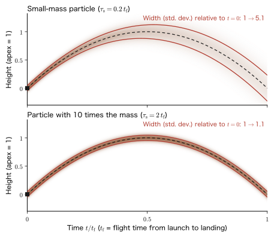
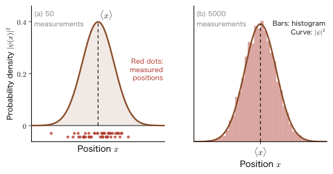
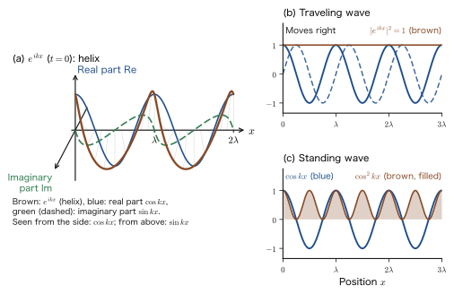
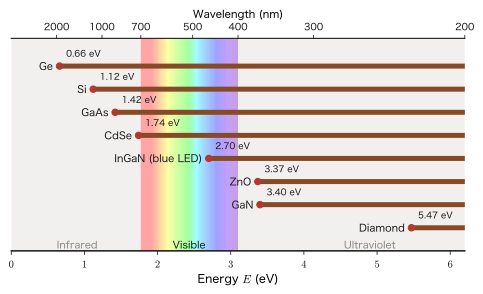
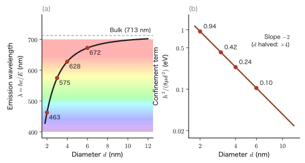

Chapter 1Why Is Quantum Mechanics Hard? — A World Where the Common Sense of Classical Physics Does Not Apply
“Quantum mechanics is hard”—you may have heard these words even before entering university. It is indeed hard. But the difficulty comes less from the many complicated equations that appear than from the fact that “the common sense of physics that we have acquired from our experience so far does not apply.” If you throw a baseball, you can state, simultaneously and as accurately as you like, where the ball is right now and how fast it is flying. The path it followed (the trajectory) is also fixed as a single line. In the world of electrons and atoms, however, position and momentum (mass × velocity) cannot be determined simultaneously with arbitrary accuracy. The trajectory is not a single line but is blurred like a gradation of probability, and a physical quantity can in most cases be described only by its average value (expectation value). Moreover, even the formula that represents a wave is no longer the $\cos(kx-\omega t)$ you learned in high school but the complex expression $e^{i(kx-\omega t)}$.
In this chapter, we first check, one by one, the “four places” where the common sense of classical physics (the physics up to AD 03, “Introductory University Physics”) breaks down, using experimental facts, familiar numbers, figures, and a minimum of equations (Section 1.1). Next, so that you can judge for yourself “from what point on we must use quantum mechanics,” we acquire the yardsticks of the microscopic world—length, energy, action (the Planck constant), and the de Broglie wavelength (Section 1.2). We then survey how quantum mechanics lies at the root of familiar phenomena encountered in materials engineering, such as the stability of matter, color, semiconductors, quantum dots, magnets, chemical bonds, electron microscopes, and scanning tunneling microscopes (Section 1.3). This chapter is not one in which we solve difficult equations. It is a map chapter, for grasping “what the quantum mechanics studied throughout this book is for, and what kind of science it is.” This chapter serves as the prologue (introductory chapter) of the whole book.
This book consists of 11 parts and proceeds in the order of the history of physics. After confirming “why it is hard” and the “naive questions” in Part I (this chapter and the next), we move in Part II, “The Dawn of Quantum Theory,” from the experimental facts of blackbody radiation, the photoelectric effect, the Bohr atomic model, Compton scattering and matter waves, and the electron slit experiment to the axioms of quantum mechanics. In Part III we solve the Schrödinger equation for wells, tunneling, the harmonic oscillator, and the hydrogen atom. In Part IV we study orbital and spin angular momentum; in Parts V and VI, approximation methods (perturbation theory and the variational principle); in Part VII, many-electron systems (the Hartree–Fock approximation, chemical bonding, and crystal bands); in Part VIII, ligand field theory, which explains the colors of transition-metal ions; in Part IX, time-dependent quantum mechanics (absorption and emission of light, and linear response); in Part X, second quantization; and in Part XI, relativistic quantum mechanics (the Dirac equation). The place of each part, and the bridges to the companion volumes, are summarized in the map in Section 1.4 (Figure 1.11).
- Be able to explain, with numbers and figures, the four places where the common sense of classical physics changes in quantum theory (position and momentum, trajectory, physical quantities, and the wave formula)
- Be able to explain uncertainty not as “poor accuracy of the measuring instrument” but as a fundamental property arising from the fact that particles have wave properties, and to show numerically, using $\Delta v\ge\hbar/(2m\Delta x)$, how electrons, atoms, and baseballs differ
- Be able to convert among eV, K, cm−1, THz, and nm, and to use the yardsticks of length, energy, and action to judge the boundary between the classical and the quantum
- Be able to calculate the de Broglie wavelength of an electron, $\lambda=1.226\ \mathrm{nm}/\sqrt{E/\mathrm{eV}}$, and the thermal de Broglie wavelength
- Be able to estimate, from the viewpoint of quantum mechanics, the emission wavelength of a semiconductor, the color of a quantum dot, the current in a scanning tunneling microscope (STM), and the wavelength of the electron beam in an electron microscope
- Be able to explain the flow of this book's 11 parts and its relation to the companion volumes (AD 05–09)
Source notes: Yasuhide Mochizuki, “Physics Notes: Quantum Mechanics 1,” pp. 3–4.
1.1 What “Quantum Mechanics Is Hard” Really Means — Four Places Where the Common Sense of Classical Physics Breaks Down
There is a preconception that quantum mechanics is hard. Then why is it hard? In a word, it is because “the intuition we built up from everyday things about 1 m in size and about 1 kg in weight does not carry over to electrons and atoms.” Classical physics (Newtonian mechanics, electromagnetism, and thermodynamics) explains phenomena at everyday scales superbly. Yet the following four pieces of “common sense,” which were taken for granted in classical physics, do not hold in the microscopic world. Table 1.1 summarizes these four places.
| Common sense of classical physics | The picture in quantum theory | Section in this book |
|---|---|---|
| The position and momentum (= mass × velocity) of an object can be determined at the same time as accurately as we like | Position and momentum cannot both be determined as accurately as we like at the same time (uncertainty principle) | 1.1.1 |
| The trajectory of an object is determined as a single line | The trajectory is blurred like a probability density | 1.1.2 |
| Physical quantities such as position, momentum, and energy take a definite value when measured | Physical quantities are described by probability distributions, and are known only through the expectation value (mean value). However, some physical quantities are determined uniquely | 1.1.3 |
| A wave is represented by the real expression $\cos(kx-\omega t)$ | The wave function is represented by the complex expression $e^{i(kx-\omega t)}$. A traveling wave is $e^{ikx}$, and a standing wave is $\cos kx$ (or $\sin kx$) | 1.1.4 |
Below, we take up the four places in turn in Sections 1.1.1–1.1.4. Each proceeds in the order of experimental fact or familiar numbers → figure → way of thinking → minimal equations → example. What is stated here is not so much a theorem with a proof as an introduction of the form “this is how the world of quantum theory is.” The rigorous discussions are given in Chapter 8 for the uncertainty principle, in Chapters 7 and 8 for the probability interpretation, and in Chapter 9 for the Schrödinger equation (Chapter 7, Chapter 8, Chapter 9).
1.1.1 Position and momentum become unknown
The common sense of classical physics. Consider a baseball of mass $0.145\ \mathrm{kg}$ flying at $144\ \mathrm{km}$ per hour (a speed of $40\ \mathrm{m/s}$). A radar gun measures the speed of the ball, and a high-speed camera measures its position. In both cases, a better measuring instrument lets us measure as finely as we like, and there is no difficulty at all in measuring the speed and the position at the same time. In classical mechanics, if the mass of an object is known, knowing the velocity $v$ is the same as knowing the momentum $p=mv$. And if we give the position $x$ and the momentum $p$ at some time, Newton's equation of motion determines all of the subsequent motion. The state in classical mechanics is completely specified by a single point, the pair $(x,p)$ of position and momentum (a point in the plane with position and momentum on its two axes, that is, a point in phase space; Introductory University Physics, Chapter 45, Section 45.5 (in Japanese)), and both position and momentum were thought to have definite values, to arbitrary accuracy, at the same time. (The statement “if the velocity is known, the position and momentum are determined” is better restated precisely as “if the initial position and the initial velocity are known, the subsequent positions and momenta are determined.” This is because the position is determined by starting from the initial position and following the equation of motion.)
The picture in quantum theory. In quantum theory, this common sense does not hold. In a state in which the momentum of a particle (the velocity multiplied by the mass) is known exactly, the position of the particle becomes unknown. Conversely, in a state in which the position of a particle is known exactly, the momentum becomes unknown (Figure 1.1). “Unknown” here does not mean that the measuring instrument is poor; it means that the particle does not have definite values of both position and momentum in the first place. Stating this as a relation between the spread of the position and the spread of the momentum gives Heisenberg's uncertainty principle. Here the “spread” means how widely the measured values scatter (the standard deviation) when the same state is prepared many times and the position (or the momentum) is measured; it is written $\Delta x$ for the position and $\Delta p$ for the momentum.
Law 1.1: Uncertainty principle (statement of the result)
The product of the spread $\Delta x$ of the position and the spread $\Delta p$ of the momentum of a particle cannot be made smaller than $\hbar/2$:
\begin{equation} \Delta x\,\Delta p\ge\frac{\hbar}{2} \label{eq:1-uncert} \end{equation}Here $\hbar$ (h-bar) $=h/2\pi=1.0546\times10^{-34}\ \mathrm{J\,s}$ is the Planck constant $h=6.626\times10^{-34}\ \mathrm{J\,s}$ divided by $2\pi$. (The proof of this inequality is given in Chapter 8. In this chapter we use only the result.)
In words, Eq. \eqref{eq:1-uncert} says: “if we try to confine the position to a narrow range, the scatter of the momentum becomes large, and if we try to fix the momentum precisely, the scatter of the position becomes large. Both cannot be made small at the same time, and the product of the two scatters cannot be $\hbar/2$ or less.” That the $\hbar/2$ on the right-hand side is the extremely small number $10^{-35}\ \mathrm{J\,s}$ is the reason why uncertainty is invisible in the everyday world (Section 1.2.3).
Why can't $x$ and $p$ be known at the same time? — The particle as a wave
Uncertainty comes from the fact that a particle has the properties of a wave. As an experimental fact, when an electron beam is directed at a crystal, it is diffracted just as X-rays are (the experiment of Davisson and Germer, 1927; Chapter 6). When a particle such as an electron behaves as a wave, its wavelength $\lambda$ is determined by its momentum $p$ (the de Broglie relation described next). A particle with a precisely determined momentum is represented by a sine wave with one definite wavelength. Since a sine wave continues with the same shape everywhere in space, “where the particle is” is not determined.
Conversely, if we want to find the particle in a narrow region, the wave must be made into a “wave packet” that has a bulge only in a narrow region. A wave localized in a narrow region cannot be built without superposing many sine waves of different wavelengths. That a relation $\Delta x\,\Delta k\gtrsim1$ ($\gtrsim$ is a symbol meaning “approximately greater than or equal to”) holds between the width $\Delta x$ of a wave packet and the spread $\Delta k$ of the wavenumber ($k=2\pi/\lambda$) needed to build it was learned in Introductory University Physics, Chapter 17, Section 17.6. That the wavelength spans many values means that the momentum is not fixed at a single value. Momentum and wavenumber are connected by $p=\hbar k$ ($p=h/\lambda=\hbar k$), so $\Delta p=\hbar\,\Delta k$, and $\Delta x\,\Delta k\gtrsim1$ means almost the same thing as $\Delta x\,\Delta p\gtrsim\hbar$. When the spreads are defined precisely as standard deviations, the lower bound becomes $\hbar/2$.
A familiar example is sound. A long, sustained “pong” has one clearly determined pitch (frequency), whereas the short “clap” made by clapping hands has no particular pitch and contains sounds of many frequencies. The same relation holds between the duration of a sound and the vagueness of its frequency. Uncertainty is a property common to all waves; it is not a strange “rule” peculiar to quantum mechanics but a natural consequence of the particle being a wave.
We now state as a law the relation used here, that “a particle of momentum $p$ behaves as a wave of wavelength $\lambda=h/p$.” This extends the relation $p=h/\lambda$, which was known for the photon, to particles such as the electron.
Law 1.2: The de Broglie relation (statement of the result)
A particle of momentum $p$ has the properties of a wave of wavelength $\lambda$, and the two are related as follows (de Broglie, 1924):
\begin{equation} \lambda=\frac{h}{p}=\frac{h}{mv}\qquad\Bigl(\text{wavenumber }k=\frac{2\pi}{\lambda}\text{ gives }p=\hbar k\Bigr) \label{eq:1-debroglie} \end{equation}(We derive this relation in Part II, starting from the momentum of light (Chapter 6).)
Example 1.1: The de Broglie wavelength of a baseball and of an electron
(1) A baseball of mass $0.145\ \mathrm{kg}$ is flying at $40\ \mathrm{m/s}$. Find its de Broglie wavelength. (2) Find the de Broglie wavelengths of an electron with a kinetic energy of $1\ \mathrm{eV}$ and of an electron with a kinetic energy of $100\ \mathrm{eV}$ (the energy unit eV is explained in Section 1.2.2; $1\ \mathrm{eV}=1.602\times10^{-19}\ \mathrm{J}$). (3) Taking the interatomic spacing of a crystal to be $0.25\ \mathrm{nm}$, in which case is the wave nature easy to see?
Solution. (1) The momentum is $p=mv=0.145\times40=5.80\ \mathrm{kg\,m/s}$. By Eq. \eqref{eq:1-debroglie}, $$ \lambda=\frac{h}{p}=\frac{6.626\times10^{-34}\ \mathrm{J\,s}}{5.80\ \mathrm{kg\,m/s}}=1.14\times10^{-34}\ \mathrm{m} $$ (since $\mathrm{J\,s}=\mathrm{kg\,m^2/s}$, the unit of the result of the division is $\mathrm{m}$). This is smaller still, by a factor of $10^{19}$, than the size of an atomic nucleus (about $10^{-15}\ \mathrm{m}$).
(2) The mass of the electron is $m_{\mathrm e}=9.109\times10^{-31}\ \mathrm{kg}$. If the kinetic energy is $E$, then $E=p^2/2m_{\mathrm e}$, so $p=\sqrt{2m_{\mathrm e}E}$. For $E=1\ \mathrm{eV}=1.602\times10^{-19}\ \mathrm{J}$, $$ p=\sqrt{2\times9.109\times10^{-31}\times1.602\times10^{-19}}\ \mathrm{kg\,m/s}=\sqrt{2.919\times10^{-49}}\ \mathrm{kg\,m/s}=5.402\times10^{-25}\ \mathrm{kg\,m/s} $$ $$ \lambda=\frac{6.626\times10^{-34}}{5.402\times10^{-25}}\ \mathrm{m}=1.226\times10^{-9}\ \mathrm{m}=1.226\ \mathrm{nm} $$ The speed in this case is $v=p/m_{\mathrm e}=5.93\times10^{5}\ \mathrm{m/s}$. For $E=100\ \mathrm{eV}$, $E$ is 100 times larger, so $p$ is 10 times larger and $\lambda$ becomes $1/10$ as large: $\lambda=0.1226\ \mathrm{nm}$ ($v=5.93\times10^{6}\ \mathrm{m/s}$; this is about 2% of the speed of light, so the nonrelativistic formula is adequate).
(3) The condition for a wave diffracted by the rows of atoms in a crystal to reinforce itself (the Bragg condition) can be satisfied only when the wavelength is at most twice the plane spacing. The wave nature, in the form of diffraction, is clearly observed when the wavelength is comparable to the interatomic spacing ($0.25\ \mathrm{nm}$) or shorter. A $1\ \mathrm{eV}$ electron has $\lambda=1.226\ \mathrm{nm}$, about five times the interatomic spacing, and does not form a diffraction pattern in a crystal. A $100\ \mathrm{eV}$ electron has $\lambda=0.1226\ \mathrm{nm}$, shorter than the interatomic spacing, and is diffracted by a crystal (the Davisson–Germer experiment used an electron beam of about $54\ \mathrm{eV}$, for which $\lambda=0.167\ \mathrm{nm}$). The baseball's $\lambda=10^{-34}\ \mathrm{m}$, on the other hand, is far smaller than the size of, or the spacing in, any object, so its wave nature is never observed (a detailed analysis of electron diffraction experiments is given in Chapter 6, Section 6.5).
Next, let us see how the uncertainty depends on the mass of the particle. Since the momentum is $p=mv$, the spread $\Delta p$ in the momentum is related to the spread $\Delta v$ in the speed by $\Delta p=m\,\Delta v$. Substituting this into Eq. \eqref{eq:1-uncert} and dividing by $m$, we obtain
\begin{equation} \Delta v\ \ge\ \frac{\hbar}{2m\,\Delta x} \label{eq:1-dv} \end{equation}When the position is fixed to within a range $\Delta x$, the spread in the speed is at least $\hbar/(2m\Delta x)$. This lower bound is proportional to the reciprocal of the mass $m$. That is, the lighter the particle, the larger the uncertainty in its speed. Figure 1.2 (a) plots the lower bound of $\Delta v$ for position spreads fixed at $\Delta x=0.1,\ 0.3,\ 1\ \mathrm{nm}$ against the reciprocal of the mass, $m^{-1}$ (expressed as $m_{\mathrm e}/m$, with the electron mass $m_{\mathrm e}$ as the unit). All of them are straight lines through the origin, and the smaller the mass (the larger $m^{-1}$), the larger the uncertainty. For the electron ($m_{\mathrm e}/m=1$) the value is large, but for the proton ($m_{\mathrm e}/m_{\mathrm p}=1/1836$) it sticks almost to the origin (what is drawn here is a relation that concerns only the lower bound allowed by the uncertainty principle; the spread in the speed in an actual state can be larger than this, depending on the state). Panel (b) draws the same relation on a logarithmic mass axis: from the electron to a $1\ \mathrm{g}$ object the mass varies by about 27 orders of magnitude (the mass ratio is $1\ \mathrm{g}/m_{\mathrm e}=1.1\times10^{27}$), and we see that the lower bound of $\Delta v$ also varies by 27 orders of magnitude.
![Two graphs showing the relation between uncertainty and mass. (a) With the reciprocal of the mass, in units of the electron mass, on the horizontal axis and the lower bound of the speed uncertainty on the vertical axis, three straight lines through the origin are drawn for position spreads of 0.1 nm, 0.3 nm, and 1 nm. The electron lies at the upper-right end, and the proton lies very close to the origin. (b) A downward-sloping straight line on a log–log plot, with the position spread fixed at 1 nm, mass on the horizontal axis, and the lower bound of the speed uncertainty on the vertical axis. Points for the electron, the proton, C60, a dust particle 1 micrometer in diameter, and a 1 gram object lie on the line](figs/ch01_fig1-2.svg)
Example 1.2: Confining an electron within the size of an atom
An electron (mass $m_{\mathrm e}=9.109\times10^{-31}\ \mathrm{kg}$) is confined to a range with position spread $\Delta x=0.1\ \mathrm{nm}$ (the size of an atom) and to one with $\Delta x=1\ \mathrm{nm}$. Find the lower bound $\Delta v_{\min}$ of the spread in speed. Also, by comparing it with the typical speed of an electron in a hydrogen atom, $2.19\times10^{6}\ \mathrm{m/s}$ (Section 1.2.4), consider whether the picture of “drawing the trajectory of the electron” holds.
Solution. We compute the case of equality in Eq. \eqref{eq:1-dv}. For $\Delta x=0.1\ \mathrm{nm}=1\times10^{-10}\ \mathrm{m}$, $$ \Delta v_{\min}=\frac{\hbar}{2m_{\mathrm e}\Delta x}=\frac{1.0546\times10^{-34}\ \mathrm{J\,s}}{2\times9.109\times10^{-31}\ \mathrm{kg}\times1\times10^{-10}\ \mathrm{m}}=5.79\times10^{5}\ \mathrm{m/s} $$ ($\mathrm{J\,s/(kg\,m)}=\mathrm{kg\,m^2\,s^{-1}/(kg\,m)}=\mathrm{m/s}$). For $\Delta x=1\ \mathrm{nm}$, $\Delta x$ is 10 times larger, so $\Delta v_{\min}=5.79\times10^{4}\ \mathrm{m/s}$.
Compared with the speed of the electron in the hydrogen atom, $2.19\times10^{6}\ \mathrm{m/s}$, the spread in speed $5.79\times10^{5}\ \mathrm{m/s}$ when the electron is confined to $\Delta x=0.1\ \mathrm{nm}$ is as much as about 26% of it (about one quarter). Because the speed itself of an electron in an atom carries a large uncertainty, the trajectory picture, “it passes through here now at this speed and in the next moment it is over there,” does not hold. For a baseball ($0.145\ \mathrm{kg}$), on the other hand, even if the position is fixed to $\Delta x=1\ \mathrm{mm}$, $\Delta v_{\min}=\dfrac{1.0546\times10^{-34}\ \mathrm{J\,s}}{2\times0.145\ \mathrm{kg}\times10^{-3}\ \mathrm{m}}=3.6\times10^{-31}\ \mathrm{m/s}$ is extremely small (for an object of mass $1.0\ \mathrm{g}$, see Illustration 1.1), and the trajectory picture poses no problem at all.
Question: What were the $x$ and $p$ we have used until now?
If the position $x$ and the momentum $p$ cannot be determined simultaneously, what on earth were the $x$ and $p$ that we have been using all along in mechanics? There are two answers.
First, classical mechanics is a “good approximation” to quantum mechanics. Suppose that the position of a baseball is determined to a precision of $1\ \mathrm{mm}$ and its speed to a precision of $0.01\ \mathrm{m/s}$. Then $\Delta x\,\Delta p=1\ \mathrm{mm}\times(0.145\ \mathrm{kg}\times0.01\ \mathrm{m/s})=1.45\times10^{-6}\ \mathrm{J\,s}$, which is about $2.7\times10^{28}$ times the lower bound $\hbar/2=5.27\times10^{-35}\ \mathrm{J\,s}$ required by the uncertainty principle. Since this is nowhere near the lower bound, no contradiction arises if we treat the position and the momentum as simultaneously definite.
Second, even in quantum mechanics the position and the momentum do not “disappear.” If we measure the position, we obtain a single value each time. However, when we prepare the same state and measure it repeatedly, the value scatters from one measurement to the next (Section 1.1.3). The $x$ and $p$ of classical mechanics can be regarded, in quantum mechanics, as the average values (expectation values) at the center of that scatter.
For this reason, those of us who live in the macroscopic world (the world of everyday sizes) cannot grasp intuitively how particles in the microscopic world behave. Our senses have been honed in a world that deals with actions so large that $\hbar$ can be neglected (Section 1.2.3). If we try to imagine the behavior of a world in which $\hbar$ cannot be neglected using everyday intuition, we usually fail. This is not a problem of our ability to understand; it is a problem of the range that our experience reaches. Therefore, in studying quantum mechanics we do not rely on our senses; instead, we build a new intuition from scratch, relying on the magnitudes of numbers (Section 1.2) and on logic (equations).
1.1.2 The trajectory is not uniquely determined
The common sense of classical physics. A ball thrown at an angle traces a parabola, and a planet travels around the Sun along an ellipse. A trajectory is the sequence of positions $x(t)$ at each time $t$. In classical mechanics, Newton's equation of motion is a differential equation of second order in time, so once the position and the velocity at one time (the initial conditions) are given, the subsequent trajectory is determined in exactly one way (Introductory University Physics, Chapter 2, Section 2.2; the trajectory of projectile motion is treated in Chapter 5, Section 5.1). This is such an obvious premise that we do not find it strange.
The picture in quantum theory. In quantum theory, the trajectory is not uniquely determined. If we fire electrons one at a time under the same conditions and examine where they arrive, each one lands at a different position. When we repeat this many times, the distribution of arrival positions spreads out like a “band” around the classical trajectory. The darkness of this band represents the magnitude of the probability that the particle is found at that place (Figure 1.3). In quantum theory, a trajectory is not a single line but something like a probability density. (If we fire electrons one at a time at a double slit, each is detected as a point, but when many points accumulate they form interference fringes. This is the experiment of Akira Tonomura and coworkers (1989). Chapter 7.) The meaning of probability density will be explained in Section 1.1.3. For now, it is enough to read it as “the darker the place, the more likely the electron is to be found there.”
How this band spreads can be calculated exactly in quantum mechanics. When only a uniform force (for example, gravity) acts, the center of the wave packet moves exactly along the classical trajectory (a parabola) (Ehrenfest's theorem; Chapter 9), and the width of the band is the same as the spread in the case where no force acts. For a Gaussian wave packet whose initial position spread (standard deviation) is $\Delta x_0$, the position spread after a time $t$ is
\begin{equation} \Delta x(t)=\Delta x_0\sqrt{1+\left(\frac{\hbar t}{2m\,\Delta x_0^{2}}\right)^{2}} \label{eq:1-spread} \end{equation}(The derivation is given from Chapter 9 onward; here we use the result.) If the shape of the wave packet is written as $\psi\propto e^{-x^2/2\sigma^2}$, then $\Delta x_0=\sigma/\sqrt2$. Let us check the meaning of Eq. \eqref{eq:1-spread}. Letting $\tau_{\mathrm s}=2m\,\Delta x_0^{2}/\hbar$, we have $\Delta x(t)=\Delta x_0\sqrt{1+(t/\tau_{\mathrm s})^2}$. As long as $t\ll\tau_{\mathrm s}$, the width stays almost equal to $\Delta x_0$, while for $t\gg\tau_{\mathrm s}$ it spreads in proportion to time, as $\Delta x(t)\approx\Delta x_0\,t/\tau_{\mathrm s}=\hbar t/(2m\Delta x_0)$. This is the initial spread in speed, $\Delta v=\hbar/(2m\Delta x_0)$ (the equality case of Eq. \eqref{eq:1-dv}), multiplied by the time $t$; that is, it is exactly the picture that “because of the spread in speed, the spread in position grows with time.” Since $\tau_{\mathrm s}$ (the spreading time) is proportional to the mass $m$, the larger the mass, the more slowly the spreading proceeds, so the band stays thin and looks like a classical trajectory. In Figure 1.3, the band of the particle with 10 times the mass hardly spreads in the same time.

Question: Why have trajectories always been uniquely determined until now?
In classical theory (Newtonian mechanics), it was taken for granted that the trajectory of a motion is uniquely determined. In quantum theory, however, the trajectory becomes something like a probability density. Why, then, were trajectories uniquely determined until now? The answer is that, for everyday objects, the spreading time $\tau_{\mathrm s}$ is orders of magnitude longer than any time scale of an experiment. In Example 1.3 below, we check how many orders of magnitude this is.
Example 1.3: Time for a wave packet to spread — an electron and a macroscopic object
Derive a formula for the time $t_2$ that it takes the width of a wave packet with initial position spread $\Delta x_0$ to double ($\Delta x(t)=2\Delta x_0$) in free motion, and compute numerical values for (a) an electron ($\Delta x_0=0.1\ \mathrm{nm}$), (b) an electron ($\Delta x_0=1\ \mathrm{\mu m}$), (c) an object of mass $1\ \mathrm{g}$ ($\Delta x_0=1\ \mathrm{\mu m}$), and (d) a baseball ($0.145\ \mathrm{kg}$, $\Delta x_0=1\ \mathrm{mm}$).
Solution. Setting $\Delta x(t)=2\Delta x_0$ in Eq. \eqref{eq:1-spread} gives $\sqrt{1+(t_2/\tau_{\mathrm s})^2}=2$, hence $1+(t_2/\tau_{\mathrm s})^2=4$, that is, $t_2=\sqrt3\,\tau_{\mathrm s}$. Substituting $\tau_{\mathrm s}=2m\Delta x_0^2/\hbar$, we obtain the following: $$ t_2=\frac{2\sqrt3\,m\,\Delta x_0^{2}}{\hbar} $$ We use $2\sqrt3=3.464$ and $\hbar=1.0546\times10^{-34}\ \mathrm{J\,s}$.
(a) For $m=9.109\times10^{-31}\ \mathrm{kg}$ and $\Delta x_0=1\times10^{-10}\ \mathrm{m}$, we have $t_2=3.464\times9.109\times10^{-31}\times10^{-20}/(1.0546\times10^{-34})=2.99\times10^{-16}\ \mathrm{s}$, or about $3\times10^{-16}\ \mathrm{s}$ ($0.3$ femtoseconds, about twice the time scale of the motion of an electron in an atom, $2\pi a_0/(\alpha c)=1.5\times10^{-16}\ \mathrm{s}$ (Example 1.6)). An electron confined inside an atom doubles the spread of its position in almost the same time as the time scale of the motion inside the atom.
(b) For $\Delta x_0=10^{-6}\ \mathrm{m}$, the time is $(10^{-6}/10^{-10})^2=10^{8}$ times the value in (a), so $t_2=3.0\times10^{-8}\ \mathrm{s}$ ($30$ nanoseconds).
(c) For $m=1\times10^{-3}\ \mathrm{kg}$ and $\Delta x_0=10^{-6}\ \mathrm{m}$, we have $t_2=3.464\times10^{-3}\times10^{-12}/(1.0546\times10^{-34})=3.3\times10^{19}\ \mathrm{s}$. Since one year is about $3.16\times10^{7}\ \mathrm{s}$, this is about $1.0\times10^{12}$ years, that is, about 75 times the age of the universe (about $1.4\times10^{10}$ years).
(d) For $m=0.145\ \mathrm{kg}$ and $\Delta x_0=10^{-3}\ \mathrm{m}$, we have $t_2=3.464\times0.145\times10^{-6}/(1.0546\times10^{-34})=4.8\times10^{27}\ \mathrm{s}$ (about $1.5\times10^{20}$ years).
An electron confined to the size of an atom becomes blurred in a time of the order of $10^{-16}\ \mathrm{s}$, whereas an object of mass $1\ \mathrm{g}$ does not become blurred for longer than the age of the universe. If the mass is larger by many powers of ten, the spreading of the wave packet can never be seen within the duration of an experiment. In this way, the classical intuition that “the trajectory is uniquely determined” becomes an extremely good approximation for macroscopic objects.
Question: What is a trajectory?
In classical theory (Newtonian mechanics), it was taken for granted that the trajectory of a motion is uniquely determined. In quantum theory, the trajectory becomes something like a probability density. Why is that? And what, in the first place, is a trajectory?
In classical mechanics, saying that “the trajectory is determined” meant that the particle's position has a single value at each instant. In quantum mechanics, what is determined at each instant is not the position but the wave function $\Psi(x,t)$. The wave function is uniquely determined from the initial wave function by the Schrödinger equation (Chapter 9). Its absolute value squared, $|\Psi(x,t)|^2$, then gives the probability density of finding the particle near the position $x$ at time $t$. In other words, quantum mechanics has not “abandoned determinism”; it has changed the quantity that “changes deterministically with time” from the position $x(t)$ to the wave function $\Psi(x,t)$. What is no longer uniquely determined is the result obtained when we actually measure the position and obtain a single value.
From here an important point about the use of words in quantum theory also emerges. The “orbital” in the “1s orbital” and “2p orbital” of chemistry does not mean the trajectory of classical mechanics (in English, an orbit); it means the wave function (an orbital) that expresses the spatial spread of the electron (Chapter 15, Chapter 16). The electron of a hydrogen atom is not a point circling the atomic nucleus; it is spread out like an “electron cloud” centered on the nucleus.
1.1.3 Physical quantities become expectation values
The common sense of classical physics. In classical theory, the trajectory of an object is uniquely determined, so the position, the momentum, and the energy at any given time all have a single exact value. A measurement is merely an operation that reads off that value.
The picture in quantum theory. In quantum theory, the trajectory of a particle is not uniquely determined, so physical quantities such as position, momentum, and energy are represented by probability distributions, and only their expectation values can be known (Figure 1.4). For example, prepare electrons that are in exactly the same state, one at a time under the same conditions, and measure the position over and over. Each time, the electron is found at a different place. With one or two measurements, the distribution of measured values looks like nothing more than a scatter of points, but as the measurements accumulate, it approaches a distribution of a definite shape. What determines the shape of this distribution is the wave function $\psi(x)$.
Law 1.3: The Born interpretation (introduced in words)
When a state is represented by a wave function $\psi(x)$, $|\psi(x)|^2$ is the probability density of finding the particle near the position $x$. That is, the probability that the position is found between $x$ and $x+\mathrm{d}x$ is $|\psi(x)|^2\,\mathrm{d}x$ (Born, 1926. For the idea of probability density, see University Mathematics, Chapter 14, Section 14.2).

The wave function itself takes complex values and cannot be measured directly. What can be measured is the magnitude of the probability, $|\psi|^2$. When the measured values scatter every time, the expectation value is what represents the result of the measurements by a single number.
Definition 1.1: Expectation value (mean value)
Suppose that we prepare the same state and repeat the measurement of a physical quantity $A$ a total of $N$ times, and that the value $A_j$ is obtained $n_j$ times. The average as the number of measurements is increased without limit,
\begin{equation} \langle A\rangle=\lim_{N\to\infty}\sum_j A_j\,\frac{n_j}{N}=\sum_j A_j\,P_j \label{eq:1-expect} \end{equation}is called the expectation value of $A$. Here $P_j$ is the probability that the value $A_j$ is obtained. For a quantity that takes continuous values, such as position, the sum becomes an integral, and $\langle x\rangle=\displaystyle\int x\,|\psi(x)|^2\,\mathrm{d}x$.
The idea of the expectation value is the same as in the probability chapter of AD 02 (Chapter 14, Section 14.1: discrete random variables; Section 14.4: continuous random variables). The expectation value of the number shown by a die is $(1+2+3+4+5+6)/6=3.5$, but a $3.5$ never comes up. The expectation value is not “the value obtained in a single measurement” but “the average over many measurements.” The same holds for $\langle x\rangle$ in Figure 1.4. For a symmetric distribution like the one in this figure, $\langle x\rangle$ coincides with the position where the distribution is densest, but in general the expectation value is not necessarily the position at which the particle is most likely to be found (like the $3.5$ of the die, the expectation value itself may never be measured even once). The expectation values of momentum and energy can also be computed from the wave function in the same way (Chapter 8). Related simulator: Expectation Values in Probability — From the Roll of a Die to $|\psi|^2$.
Illustration 1.1: Uncertainty in the speed of an object of mass $1.0\ \mathrm{g}$ — is it really “exact”?
We stated that in classical theory the position and the momentum of an object are determined exactly. Is this really exact? Let us check it with an object of mass $1.0\ \mathrm{g}$.
Suppose that the position is determined to within $\Delta x=1\ \mathrm{\mu m}$ (about one hundredth of the thickness of a human hair, and just about the precision that an optical microscope can attain). The lower bound in Eq. \eqref{eq:1-dv} is as follows: $$ \Delta v_{\min}=\frac{\hbar}{2m\,\Delta x}=\frac{1.0546\times10^{-34}\ \mathrm{J\,s}}{2\times1.0\times10^{-3}\ \mathrm{kg}\times1\times10^{-6}\ \mathrm{m}}=5.3\times10^{-26}\ \mathrm{m/s} $$ If the position is determined only to within $\Delta x=1\ \mathrm{mm}$, then $\Delta x$ becomes 1000 times larger, so the bound becomes $5.3\times10^{-29}\ \mathrm{m/s}$. Both are so small that no measuring instrument could detect them. Even if the speed could be measured to a precision of $10^{-6}\ \mathrm{m/s}$ (which would be an extremely precise measurement), the lower bound imposed by quantum mechanics is only about one part in $2\times10^{19}$ of that. The uncertainty in the speed of an object of mass $1.0\ \mathrm{g}$ is, for all practical purposes, nonexistent, and the classical statement that it is “determined exactly” is indeed exact within the precision of measurement.
Discussion: Some physical quantities are uniquely determined
There are, however, physical quantities that are uniquely determined. Even though physical quantities are represented by probability distributions, the measured values do not scatter in every state. In some states, the measured value of a certain physical quantity comes out the same every time it is measured. Such a state is called an eigenstate of that physical quantity, and the value obtained then is called an eigenvalue (Chapter 9). For example, the following are uniquely determined.
- The energy of a stationary state, such as the energy $-13.6\ \mathrm{eV}$ of a hydrogen atom in its ground state or the energy $E_n=n^2h^2/(8mL^2)$ of the $n$th state of a particle in a box (Chapter 10, Chapter 15). If we measure in a state of definite energy, we obtain the same value no matter how many times we measure.
- The mass of the electron, $9.109\times10^{-31}\ \mathrm{kg}$, the charge of the electron (using the elementary charge $e_0$, it is written $-e_0$; $e_0$ is explained in Section 1.2.2), and the magnitude of the electron spin (Chapter 23) always have the same values for any electron.
- Values in eigenstates, such as the momentum $\hbar k$ in a state of definite momentum ($e^{ikx}$ in Section 1.1.4), the magnitude of the angular momentum and its $z$ component, and the $z$ component $\pm\hbar/2$ of the electron spin (Chapter 21, Chapter 23).
Whether a quantity is uniquely determined or scatters is decided quantity by quantity and state by state. In a state of definite position (an eigenstate of position) the momentum scatters, and in a state of definite momentum (an eigenstate of momentum) the position scatters (Section 1.1.1). Similarly, even in a stationary state of definite energy, the position generally scatters. In the ground state of the hydrogen atom, the energy is uniquely determined as $-13.6\ \mathrm{eV}$, but the position of the electron has a distribution spread out like a cloud around the nucleus.
Note also that the fact that the particle is always found somewhere (that is, that the total probability is 1) is not the value of a physical quantity but a condition that the wave function must always satisfy. Fixing the magnitude of the wave function so that the total probability becomes 1 is called normalization (Chapter 8, Section 8.1).
1.1.4 The wave formula becomes $e^{i(kx-\omega t)}$
The common sense of classical physics. In classical waves such as water waves, sound, and waves traveling along a string, a real quantity at position $x$ and time $t$ (the height of the water surface, the air pressure, the displacement of the string) is expressed by a trigonometric function such as $\cos(kx-\omega t)$ (Introductory University Physics, Chapter 11, Section 11.3). Here $k=2\pi/\lambda$ is the wavenumber and $\omega=2\pi/T$ is the angular frequency ($T$ is the period), and this wave travels in the positive $x$ direction with speed $\omega/k$ (ibid., Section 11.4). A wave that merely oscillates in place without traveling, like a string with both ends fixed, is called a standing wave and is expressed, like $\cos kx\cdot\cos\omega t$, as a product of a function of position and a function of time (ibid., Section 11.7).
The picture in quantum theory. The wave function of quantum theory takes complex values, and the traveling wave of a freely moving particle is expressed, using Euler's formula (University Mathematics, Chapter 21, Section 21.4), as
\begin{equation} \Psi(x,t)=e^{i(kx-\omega t)}=\cos(kx-\omega t)+i\sin(kx-\omega t) \label{eq:1-plane} \end{equation}where $i$ is the imaginary unit. If we drop the time factor and look only at the spatial part, in quantum theory a traveling wave is expressed by $e^{ikx}$, and a standing wave is expressed by $\cos kx$ (or $\sin kx$). Figure 1.5 illustrates this. The complex number $e^{ikx}$ goes around the unit circle in the complex plane at a constant rate as $x$ increases. If we put the position $x$ on the horizontal axis and the real and imaginary parts along the vertical and depth directions, $e^{ikx}$ becomes a helix. The real part ($\cos kx$) and the imaginary part ($\sin kx$) are two waves whose phases are shifted by $1/4$ of a wavelength.

Let us read out the content of the complex wave in the language of physics.
- Traveling wave $e^{ikx}$. It represents a state of definite momentum $p=\hbar k$ (in the positive $x$ direction) (the relation $p=\hbar k$ in Eq. \eqref{eq:1-debroglie}). Since $|e^{ikx}|^2=\cos^2kx+\sin^2kx=1$, the probability density of position is constant, independent of $x$, and the position of the particle is completely unknown. This is nothing other than the statement of Section 1.1.1, “when the momentum is definite, the position becomes unknown,” seen in equation form. The direction in which the helix winds indicates the direction of the momentum ($e^{-ikx}$ winds in the opposite direction, and its momentum is $-\hbar k$). Note also that $e^{ikx}$ is an idealized wave that extends without limit throughout all space, and strictly speaking it cannot be normalized so that the total probability equals 1. The exact treatment of this point is given in Chapter 8, Section 8.1.5 (continuum normalization).
- Standing wave $\cos kx$. By Euler's formula, $\cos kx=\dfrac{e^{ikx}+e^{-ikx}}{2}$, so it is an equal superposition of a wave with momentum $+\hbar k$ and a wave with momentum $-\hbar k$ (the wave of a particle reflected back and forth by walls). The probability density of position, $\cos^2kx$, has nodes (places where the probability is $0$) at $x=\lambda/4$, $3\lambda/4,\dots$. The average momentum is $\langle p\rangle=0$, but the magnitude of the momentum is definite, $|p|=\hbar k$. “The average is $0$” and “the particle is at rest” are not the same thing.
- Time factor. In this textbook, a traveling wave that includes time is written $e^{i(kx-\omega t)}$, with $\omega=E/\hbar$ ($E$ is the energy of the particle). That the time factor is $e^{-i\omega t}$ (and not $e^{+i\omega t}$) is a convention of the whole textbook.
Why must the wave function be complex?
We give just one reason why the real wave $\cos(kx-\omega t)$ will not do. The Schrödinger equation (Chapter 9) obeyed by the wave function of a free particle acted on by no force has the form $i\hbar\,\dfrac{\partial\Psi}{\partial t}=-\dfrac{\hbar^2}{2m}\dfrac{\partial^2\Psi}{\partial x^2}$, in which the first-order derivative with respect to time carries a factor $i$. Substituting $\Psi=e^{i(kx-\omega t)}$ of Eq. \eqref{eq:1-plane}, the left-hand side becomes $\hbar\omega\,\Psi$ and the right-hand side becomes $\dfrac{\hbar^2k^2}{2m}\Psi$, so that $\hbar\omega=\dfrac{\hbar^2k^2}{2m}$, that is, the relation $E=\dfrac{p^2}{2m}$ (energy = kinetic energy) comes out correctly. If, however, we substitute the real wave $\cos(kx-\omega t)$, the left-hand side becomes the imaginary expression $i\hbar\omega\sin(kx-\omega t)$ while the right-hand side is a real expression, and the two cannot possibly be equal. The solutions of an equation that contains $i$ must be complex numbers.
On the other hand, a complex wave function cannot be measured directly. All that can be measured are real quantities such as the probability density of position, $|\Psi|^2$. The phase of the wave function (the way the helix winds) is an invisible quantity that determines the measured quantities indirectly, and the information about the momentum is contained in it.
Example 1.4: $e^{ikx}$ and $\cos kx$ — a wave of definite momentum and a wave with momentum $\pm$
Consider an electron wave of wavelength $\lambda=0.5\ \mathrm{nm}$. (1) Find the momentum $p$ and the kinetic energy $E$ of the electron. (2) When the wave function is $e^{ikx}$, state the probability density of position and the measured value of the momentum. (3) When the wave function is $\cos kx$, state the probability density of position, the measured values of the momentum and their probabilities, and the expectation value of the momentum $\langle p\rangle$. Also find the spacing of the nodes.
Solution. (1) By Eq. \eqref{eq:1-debroglie}, $p=h/\lambda=6.626\times10^{-34}\ \mathrm{J\,s}/(0.5\times10^{-9}\ \mathrm{m})=1.325\times10^{-24}\ \mathrm{kg\,m/s}$. The kinetic energy is $$ E=\frac{p^2}{2m_{\mathrm e}}=\frac{(1.325\times10^{-24})^2}{2\times9.109\times10^{-31}}\ \mathrm{J}=9.64\times10^{-19}\ \mathrm{J}=6.02\ \mathrm{eV} $$ (divided by $1\ \mathrm{eV}=1.602\times10^{-19}\ \mathrm{J}$). The speed is $v=p/m_{\mathrm e}=1.46\times10^{6}\ \mathrm{m/s}$, and the wavenumber is $k=2\pi/\lambda=12.6\ \mathrm{nm^{-1}}$. Note also that substituting $\lambda=0.5\ \mathrm{nm}$ into the formula $E=1.504\ \mathrm{eV\,nm^2}/\lambda^2$ of Section 1.2.5 gives $1.504/0.25=6.02\ \mathrm{eV}$, in agreement.
(2) Since $|e^{ikx}|^2=1$, the probability density of position is the same everywhere, and the position of the electron is completely unknown. On the other hand, the momentum is definite: $p=\hbar k=h/\lambda=1.325\times10^{-24}\ \mathrm{kg\,m/s}$ (in the positive $x$ direction); the measured value is this same value every time.
(3) Since $\cos kx=\dfrac12e^{ikx}+\dfrac12e^{-ikx}$, a wave with momentum $+\hbar k$ and a wave with momentum $-\hbar k$ are superposed with equal weight. The squared absolute values of the coefficients of the two components are equal, and when the momentum is measured, either $+\hbar k$ or $-\hbar k$ is obtained, each with probability $1/2$ (the relation between the superposition coefficients and the probabilities is treated in Chapter 8). Therefore $$ \langle p\rangle=\frac12(+\hbar k)+\frac12(-\hbar k)=0 $$ but the magnitude of the momentum, $|p|=1.325\times10^{-24}\ \mathrm{kg\,m/s}$, is definite, and the kinetic energy is $6.02\ \mathrm{eV}$, the same as in the case of $e^{ikx}$. The probability density of position is $|\cos kx|^2=\cos^2kx$, and the nodes where $\cos kx=0$ lie at $kx=\pi/2+n\pi$, that is, $x=\lambda/4+n\lambda/2$ ($n$ is an integer), which gives $x=0.125,\ 0.375,\ 0.625,\dots\ \mathrm{nm}$. The spacing of the nodes is $\lambda/2=0.25\ \mathrm{nm}$, about the same as the interatomic spacing in a crystal.
Related simulator (Sections 1.1.1–1.1.3): how the trajectory blurs as the mass is reduced can be checked in Ehrenfest's Theorem — Reducing the Mass Blurs the Trajectory, and the wave-like behavior of a particle passing through a slit can be checked in Particles Passing through Slits — Single Slit / Double Slit (as the mass is increased, the de Broglie wavelength becomes shorter and the fringe spacing narrows, so the behavior approaches that of a classical particle).
1.2 Yardsticks of the Microscopic World — Scales of Length, Energy, and Action
To decide whether a given phenomenon may be treated by classical mechanics or must be treated by quantum mechanics, we need to know whether the length, energy, and action of that phenomenon are large or small compared with the quantum scales. Here we set out the “yardsticks” for that purpose one by one. We will use these numbers again and again throughout this book. You do not need to memorize them now, but we would like you to get a feel for their orders of magnitude.
1.2.1 Yardsticks of length
The size of an atom is about $0.1\ \mathrm{nm}=10^{-10}\ \mathrm{m}$. The atomic nucleus is smaller by a factor of about $10^{4}$ to $10^{5}$, at roughly $10^{-15}$–$10^{-14}\ \mathrm{m}$ ($1\ \mathrm{fm}$ to $10\ \mathrm{fm}$), and the radius of the proton is about $0.84\ \mathrm{fm}$. The typical length over which the electron spreads in the ground state of the hydrogen atom is the Bohr radius $a_0=5.29\times10^{-11}\ \mathrm{m}=0.0529\ \mathrm{nm}$ (Part III). The length of a bond between atoms is $0.1$–$0.2\ \mathrm{nm}$ (for H–H in the hydrogen molecule, $0.074\ \mathrm{nm}$; for C–C in diamond, $0.154\ \mathrm{nm}$), and the lattice constant of a crystal is $0.3$–$0.6\ \mathrm{nm}$ ($0.361\ \mathrm{nm}$ for Cu, $0.543\ \mathrm{nm}$ for Si). On the other hand, the wavelength of visible light is $400$–$700\ \mathrm{nm}$, as much as three orders of magnitude larger than an atom. The thickness of a human hair is about $0.1\ \mathrm{mm}=10^{-4}\ \mathrm{m}$. The Compton wavelength of the electron, $h/(m_{\mathrm e}c)=2.43\times10^{-12}\ \mathrm{m}$, is a length that can be built from the electron's mass and the speed of light, and it represents the scale at which relativity and quantum theory meet (Chapter 6, Part XI). In crystallography and chemistry, the angstrom ($1\ \text{Å}=0.1\ \mathrm{nm}=10^{-10}\ \mathrm{m}$) is also often used. These lengths arranged on a logarithmic axis are shown in Figure 1.6 (a).
1.2.2 Yardsticks of energy — the electron volt
If we write the energies of atoms and molecules in J (joules), we get extremely small numbers such as $10^{-19}$. Therefore, in the world of atoms, molecules, and solids, we use the unit called the electron volt (eV).
Definition 1.2: The electron volt (eV)
One electron volt (symbol eV) is the energy gained by a particle whose charge equals the elementary charge $e_0$ when it is accelerated through a potential difference of $1\ \mathrm{V}$ in vacuum:
\begin{equation} 1\ \mathrm{eV}=e_0\times1\ \mathrm{V}=1.602\,176\,634\times10^{-19}\ \mathrm{J} \label{eq:1-ev} \end{equation}Notation: The elementary charge is $e_0$ and Napier's number is $e$
In this book we denote the elementary charge (the magnitude of the electron's charge) by $e_0=1.602\,176\,634\times10^{-19}\ \mathrm{C}$ ($\gt 0$). This is the same quantity that was written as $e$ in AD 03, “Introductory University Physics” (we matched the notation of the companion volume AD 02, Chapters 45–48, and of Computational Materials Science (AD 05)). The electron's charge is $-e_0$. The letter $e$ is used only for the base of the natural logarithm (Napier's number), as in $e^{ikx}$.
Energy has various “faces,” such as temperature, frequency, wavenumber, and wavelength. In spectroscopy and solid-state physics, these are converted to eV for comparison. With the Boltzmann constant $k_{\mathrm B}=1.380649\times10^{-23}\ \mathrm{J/K}$, the Planck constant $h$, and the speed of light $c$, the conversion relations are as follows.
| Quantity | Relation to energy | Value corresponding to $1\ \mathrm{eV}$ |
|---|---|---|
| Temperature $T$ | $E=k_{\mathrm B}T$ | $11\,604.5\ \mathrm{K}$ ($k_{\mathrm B}=8.617\,333\times10^{-5}\ \mathrm{eV/K}$) |
| Wavenumber $\tilde\nu$ ($=1/\lambda$) | $E=hc\,\tilde\nu$ | $8065.54\ \mathrm{cm^{-1}}$ |
| Frequency $\nu$ | $E=h\nu$ | $241.799\ \mathrm{THz}$ ($=2.41799\times10^{14}\ \mathrm{Hz}$) |
| Wavelength $\lambda$ | $E=hc/\lambda$ | $1239.84\ \mathrm{nm}$ ($\lambda=1239.84\ \mathrm{nm}/(E/\mathrm{eV})$) |
The $hc=1239.84\ \mathrm{eV\,nm}$ in the last row is the number most often used to find an energy from the wavelength of light. For example, the photon energy of light with wavelength $550\ \mathrm{nm}$ (green) is $1239.84/550=2.254\ \mathrm{eV}$. These rough energy scales arranged on a logarithmic axis are shown in Figure 1.6 (b). The thermal energy at room temperature ($300\ \mathrm{K}$) is $k_{\mathrm B}T=25.85\ \mathrm{meV}$ (about $1/40\ \mathrm{eV}$); the energy of the quantum of lattice vibration (phonon) in a solid is a few $\mathrm{meV}$ to a few tens of $\mathrm{meV}$; a visible-light photon has $1.77$–$3.10\ \mathrm{eV}$; the strength of a chemical bond between atoms is about $1$–$10\ \mathrm{eV}$; the ionization energy of the hydrogen atom is $13.6\ \mathrm{eV}$; an X-ray photon has an energy of the order of $\mathrm{keV}$; and the rest energy of the electron is $m_{\mathrm e}c^2=0.511\ \mathrm{MeV}$. The fact that the thermal energy at room temperature is far smaller than the energy of a chemical bond or of a visible-light photon is related to the fact that “matter does not break down at ordinary temperatures, and colors are retained.”
Example 1.5: Converting units of energy
(1) Express $1\ \mathrm{eV}$ in K, $\mathrm{cm^{-1}}$, THz, and nm (wavelength). (2) Find the energy, in eV, of a photon of wavelength $550\ \mathrm{nm}$. (3) Find, in eV, the energy of infrared light of wavenumber $1000\ \mathrm{cm^{-1}}$ (wavelength $10\ \mathrm{\mu m}$). (4) Find the thermal energy $k_{\mathrm B}T$ at room temperature, $300\ \mathrm{K}$, in meV.
Solution. (1) We use the definition \eqref{eq:1-ev} together with $k_{\mathrm B}=1.380649\times10^{-23}\ \mathrm{J/K}$, $h=6.62607015\times10^{-34}\ \mathrm{J\,s}$, and $c=2.99792458\times10^{8}\ \mathrm{m/s}$. $$ T=\frac{E}{k_{\mathrm B}}=\frac{1.602177\times10^{-19}\ \mathrm{J}}{1.380649\times10^{-23}\ \mathrm{J/K}}=1.16045\times10^{4}\ \mathrm{K} $$ $$ \tilde\nu=\frac{E}{hc}=\frac{1.602177\times10^{-19}}{6.62607\times10^{-34}\times2.99792\times10^{8}}\ \mathrm{m^{-1}}=8.06554\times10^{5}\ \mathrm{m^{-1}}=8065.54\ \mathrm{cm^{-1}} $$ ($1\ \mathrm{m^{-1}}=10^{-2}\ \mathrm{cm^{-1}}$). $$ \nu=\frac{E}{h}=\frac{1.602177\times10^{-19}}{6.62607\times10^{-34}}\ \mathrm{Hz}=2.41799\times10^{14}\ \mathrm{Hz}=241.799\ \mathrm{THz} $$ $$ \lambda=\frac{hc}{E}=\frac{1.98645\times10^{-25}\ \mathrm{J\,m}}{1.602177\times10^{-19}\ \mathrm{J}}=1.23984\times10^{-6}\ \mathrm{m}=1239.84\ \mathrm{nm} $$ (2) $E=hc/\lambda=1239.84\ \mathrm{eV\,nm}/550\ \mathrm{nm}=2.254\ \mathrm{eV}$ (green light).
(3) From $1\ \mathrm{eV}\leftrightarrow8065.54\ \mathrm{cm^{-1}}$ in (1), a wavenumber of $1000\ \mathrm{cm^{-1}}$ corresponds to $E=1000/8065.54\ \mathrm{eV}=0.1240\ \mathrm{eV}=124.0\ \mathrm{meV}$. The wavelength is $\lambda=1/\tilde\nu=1/(1000\ \mathrm{cm^{-1}})=10^{-3}\ \mathrm{cm}=10\ \mathrm{\mu m}$, which also agrees with $1239.84/0.1240=1.000\times10^{4}\ \mathrm{nm}=10\ \mathrm{\mu m}$. This lies in the infrared region, the light that is absorbed by molecular vibrations (Chapter 19).
(4) $k_{\mathrm B}T=1.380649\times10^{-23}\times300\ \mathrm{J}=4.1419\times10^{-21}\ \mathrm{J}$. Dividing this by $1.602177\times10^{-19}\ \mathrm{J/eV}$ gives $0.025852\ \mathrm{eV}=25.85\ \mathrm{meV}$ (also from $T/11604.5$: $300/11604.5=0.025852\ \mathrm{eV}$). Converted to a wavenumber, this is $25.852\times10^{-3}\times8065.54=208.5\ \mathrm{cm^{-1}}$, and the energy of the infrared light in (3), $124\ \mathrm{meV}$, is about 4.8 times the thermal energy at room temperature.
1.2.3 The Planck constant is small — action and the boundary between classical and quantum
The Planck constant $h=6.626\,070\,15\times10^{-34}\ \mathrm{J\,s}$ (defined value) is the central character of quantum mechanics. Its unit $\mathrm{J\,s}$ has the same dimension as energy × time, or momentum × length ($\mathrm{kg\,m/s}\times\mathrm{m}=\mathrm{kg\,m^2/s}$), and is called action. The fact that $h$ is extremely small is the reason why quantum effects cannot be seen in the everyday world.
For example, when an object of mass $1\ \mathrm{g}$ moves $1\ \mathrm{m}$ at a speed of $1\ \mathrm{m/s}$, its action (momentum × length) is $10^{-3}\ \mathrm{kg}\times1\ \mathrm{m/s}\times1\ \mathrm{m}=10^{-3}\ \mathrm{J\,s}$, which is about $9.5\times10^{30}$ times $\hbar=1.0546\times10^{-34}\ \mathrm{J\,s}$, that is, roughly $10^{31}$ times. In contrast, the action of an electron in an atom (momentum × size of the atom) is about the same size as $\hbar$ (Section 1.2.4).
Two criteria for judging the boundary between classical and quantum
There are two criteria for estimating whether an object can be treated by classical mechanics or requires quantum mechanics.
- Wavelength criterion. If the de Broglie wavelength $\lambda=h/p$ of a particle is sufficiently small compared with the size of the object (the spacing between particles, the size of an obstacle), wave properties do not appear and the particle can be treated as a particle. If the wavelength is comparable to or larger than the size of the object, quantum mechanics is needed.
- Action criterion. If the typical action of the system (momentum × length, energy × time) is sufficiently large compared with $\hbar$, the system is classical; if it is about $\hbar$, the system is quantum.
These two are different ways of saying the same thing. For a particle of momentum $p$ in a region of length $L$, the ratio of the wavelength to the size is $\lambda/L=h/(pL)=2\pi\hbar/(pL)$, which is none other than the reciprocal (multiplied by $2\pi$) of “how many times $\hbar$ the action $pL$ is.” When a baseball ($0.145\ \mathrm{kg}$, $40\ \mathrm{m/s}$) moves $1\ \mathrm{m}$, the action is $5.8\ \mathrm{J\,s}$, that is, about $5.5\times10^{34}$ times $\hbar$, and the wavelength $10^{-34}\ \mathrm{m}$ is $10^{-34}$ times $1\ \mathrm{m}$.
1.2.4 The speed of an electron in an atom
The mass of the electron is $m_{\mathrm e}=9.109\,383\,7015\times10^{-31}\ \mathrm{kg}$. In the ground state of the hydrogen atom, the electron is spread over a range of the order of the Bohr radius $$ a_0=\frac{4\pi\varepsilon_0\hbar^2}{m_{\mathrm e}e_0^2}=5.291\,772\times10^{-11}\ \mathrm{m} $$ ($\varepsilon_0$ is the vacuum permittivity; it is derived in Part III). If the position is confined to a range of about $a_0$, then by the uncertainty principle the momentum is of the order of $p\sim\hbar/a_0$, and the typical speed of the electron is $v\sim\hbar/(m_{\mathrm e}a_0)$. Computing it, we find that this value is exactly equal to the product $\alpha c$ of the fine-structure constant $\alpha=\dfrac{e_0^2}{4\pi\varepsilon_0\hbar c}\approx\dfrac{1}{137.036}$ and the speed of light $c$ (Example 1.6 below). The value $\alpha c=2.19\times10^{6}\ \mathrm{m/s}$ is $1/137$ (about $0.73\ \%$) of the speed of light: the electron in an atom is quite fast, but much slower than light.
Example 1.6: Numerical values at the atomic scale — $a_0$, $\alpha c$, $E_{\mathrm h}$
(1) Compute $\hbar/(m_{\mathrm e}a_0)$ and show by a formula that it equals $\alpha c$. (2) As a rough guide to the time scale of the motion of an electron in an atom, find the time it takes to travel the circumference $2\pi a_0$ at the speed $\alpha c$ (this does not mean that the electron goes around a circular orbit). (3) Using only the quantity $\dfrac{e_0^2}{4\pi\varepsilon_0}$ that characterizes the Coulomb interaction between the electron and the nucleus (charge $+e_0$), the electron mass $m_{\mathrm e}$, and $\hbar$, construct a length and an energy by dimensional analysis, and compute their values.
Solution. (1) $\hbar/(m_{\mathrm e}a_0)=1.05457\times10^{-34}/(9.10938\times10^{-31}\times5.29177\times10^{-11})=1.05457\times10^{-34}/4.82035\times10^{-41}=2.1877\times10^{6}\ \mathrm{m/s}$. On the other hand, $\alpha c=7.29735\times10^{-3}\times2.99792\times10^{8}=2.1877\times10^{6}\ \mathrm{m/s}$, so the two agree. This can also be confirmed by a formula. Substituting $a_0=4\pi\varepsilon_0\hbar^2/(m_{\mathrm e}e_0^2)$, we obtain $$ \frac{\hbar}{m_{\mathrm e}a_0}=\frac{\hbar}{m_{\mathrm e}}\cdot\frac{m_{\mathrm e}e_0^2}{4\pi\varepsilon_0\hbar^2}=\frac{e_0^2}{4\pi\varepsilon_0\hbar}=\alpha c $$ (the last equality is the definition of $\alpha$).
(2) $\tau_{\mathrm a}=\dfrac{2\pi a_0}{\alpha c}=\dfrac{2\pi\times5.29177\times10^{-11}\ \mathrm{m}}{2.1877\times10^{6}\ \mathrm{m/s}}=1.520\times10^{-16}\ \mathrm{s}=0.152\ \mathrm{fs}$ (femtoseconds, $1\ \mathrm{fs}=10^{-15}\ \mathrm{s}$). The motion of an electron in an atom takes place on a time scale of about $10^{-16}\ \mathrm{s}$. This does not mean that the electron goes around a circular orbit (as discussed in Section 1.1.2, no trajectory can be drawn for an electron in an atom); it is a rough guide obtained by multiplying the time scale $a_0/(\alpha c)$ of the motion of the electron in the atom by $2\pi$.
(3) From $k_e\equiv e_0^2/(4\pi\varepsilon_0)$ (unit $\mathrm{J\,m}=\mathrm{kg\,m^3\,s^{-2}}$), $m_{\mathrm e}$ ($\mathrm{kg}$), and $\hbar$ ($\mathrm{kg\,m^2\,s^{-1}}$), we form a length $\ell=\hbar^{a}m_{\mathrm e}^{b}k_e^{c}$. Comparing units, the exponent of $\mathrm{kg}$ gives $a+b+c=0$, the exponent of $\mathrm{m}$ gives $2a+3c=1$, and the exponent of $\mathrm{s}$ gives $-a-2c=0$. From the third equation, $a=-2c$; substituting this into the second equation gives $-4c+3c=1$, so $c=-1$, $a=2$, $b=-1$. Therefore $$ \ell=\frac{\hbar^2}{m_{\mathrm e}k_e}=\frac{4\pi\varepsilon_0\hbar^2}{m_{\mathrm e}e_0^2}=a_0=5.29\times10^{-11}\ \mathrm{m} $$ that is, $a_0$. The energy can be written in the form of the Coulomb energy $k_e/\ell$: $$ E_{\mathrm h}=\frac{k_e}{a_0}=\frac{m_{\mathrm e}k_e^2}{\hbar^2}=\frac{e_0^2}{4\pi\varepsilon_0a_0} $$ The numerical value follows from $k_e=(1.602177\times10^{-19})^2/(4\pi\times8.85419\times10^{-12})=2.30708\times10^{-28}\ \mathrm{J\,m}$, which gives $E_{\mathrm h}=2.30708\times10^{-28}/5.29177\times10^{-11}=4.3597\times10^{-18}\ \mathrm{J}=27.211\ \mathrm{eV}$. This is called the Hartree energy, and it is twice the magnitude $13.606\ \mathrm{eV}$ of the ground-state energy of the hydrogen atom (Chapter 15) ($E_{\mathrm h}=2\times13.606\ \mathrm{eV}$). The energies of atoms and molecules range from a fraction of $E_{\mathrm h}$ to several times that.
1.2.5 Yardsticks of the de Broglie wavelength
To use the wavelength criterion, it is convenient to be able to compute the de Broglie wavelength $\lambda=h/p$ of a particle (Eq. \eqref{eq:1-debroglie}) from its energy. A particle of mass $m$ and kinetic energy $E$ (we assume $E\ll mc^2$) has $p=\sqrt{2mE}$, so we obtain
\begin{equation} \lambda=\frac{h}{\sqrt{2mE}} \label{eq:1-lamE} \end{equation}For electrons, when $E$ is measured in eV, we have
$$ \lambda_{\mathrm e}=\frac{h}{\sqrt{2m_{\mathrm e}E}}=\frac{1.226\ \mathrm{nm}}{\sqrt{E/\mathrm{eV}}} $$(In the calculation of Example 1.1, for $E=1\ \mathrm{eV}$ the wavelength is $1.226\ \mathrm{nm}$, and if $E$ becomes 100 times larger, $\lambda$ becomes $1/10$.) Squaring both sides and solving for $E$, we can find the energy from the wavelength:
$$ E=\frac{h^2}{2m_{\mathrm e}\lambda^2}=\frac{1.504\ \mathrm{eV\,nm^2}}{\lambda^2} $$(Here $h^2/(2m_{\mathrm e})=1.504\ \mathrm{eV\,nm^2}$.) Since the neutron and the proton are about 1839 and 1836 times as massive as the electron, $\lambda=0.0286\ \mathrm{nm}/\sqrt{E/\mathrm{eV}}$ for them. The photon has no mass and its momentum is $p=E/c$, so $\lambda=h/p=hc/E=1239.84\ \mathrm{nm}/(E/\mathrm{eV})$, and Eq. \eqref{eq:1-debroglie} holds for light as well. When the kinetic energy $E$ of an electron approaches the rest energy $m_{\mathrm e}c^2=0.511\ \mathrm{MeV}$, the nonrelativistic formula becomes inaccurate, and one must use $\lambda=hc/\sqrt{E(E+2m_{\mathrm e}c^2)}$ (Example 1.11).
Figure 1.7 shows the wavelengths of electrons, neutrons, protons, and photons as functions of energy on a logarithmic graph. For the same energy, the lighter the particle, the longer the wavelength. We also see that the energy at which the wavelength becomes comparable to the interatomic spacing of a crystal ($0.1$–$0.3\ \mathrm{nm}$, brown band) is completely different for each particle: several tens of eV for electrons, several tens of meV for neutrons, and several keV for photons (X-rays).
![A log-log graph of the wavelengths of electrons, neutrons, protons, and photons as functions of energy. All are straight lines sloping downward to the right, and at the same energy the lighter the particle, the longer the wavelength. The curves for the neutron and the proton almost coincide. The graph shows a band from 0.1 to 0.3 nanometers corresponding to the interatomic spacing, and the positions of thermal neutrons, a 100-electron-volt low-energy electron beam, the 200-kiloelectron-volt electron beam of an electron microscope, copper K-alpha X-rays, and green visible light](figs/ch01_fig1-7.svg)
Example 1.7: Even for the same wavelength $0.154\ \mathrm{nm}$, the energy is completely different for each particle
Find the energies of (a) a photon, (b) an electron, and (c) a neutron of wavelength $0.154\ \mathrm{nm}$ (the wavelength of Cu $\mathrm{K}\alpha$ X-rays, which are widely used for crystal diffraction). Also find the wavelength of a thermal neutron (a neutron with the conventional energy $25.3\ \mathrm{meV}$, which corresponds to $T\approx294\ \mathrm{K}$ in $k_{\mathrm B}T$). In diffraction, what is each of them suited for investigating?
Solution. (a) Photon: $E=hc/\lambda=1239.84\ \mathrm{eV\,nm}/0.154\ \mathrm{nm}=8051\ \mathrm{eV}=8.05\ \mathrm{keV}$.
(b) Electron: from Eq. \eqref{eq:1-lamE}, $E=h^2/(2m_{\mathrm e}\lambda^2)$. Since $h^2/(2m_{\mathrm e})=1.504\ \mathrm{eV\,nm^2}$ (squaring $\lambda=1.226\ \mathrm{nm}/\sqrt{E/\mathrm{eV}}$ gives $E=1.226^2/\lambda^2=1.504/\lambda^2\ \mathrm{eV}$), we have $E=1.504/0.154^2=1.504/0.02372=63.4\ \mathrm{eV}$.
(c) Neutron: since $h^2/(2m_{\mathrm n})=0.0286^2\ \mathrm{eV\,nm^2}=8.18\times10^{-4}\ \mathrm{eV\,nm^2}$, we have $E=8.18\times10^{-4}/0.02372=3.45\times10^{-2}\ \mathrm{eV}=34.5\ \mathrm{meV}$. For a thermal neutron, the conventional energy is $E=25.3\ \mathrm{meV}$, so $\lambda=0.0286/\sqrt{0.0253}=0.180\ \mathrm{nm}$ (comparable to the interatomic spacing). (With the definition that takes $\tfrac32k_{\mathrm B}T=38.8\ \mathrm{meV}$ at $300\ \mathrm{K}$ as the energy of a thermal neutron, $\lambda=0.145\ \mathrm{nm}$, and both are comparable to the interatomic spacing.) Applications of diffraction by electron beams and neutron beams are treated in detail in Chapter 6, Section 6.6.
The way each kind of particle is used is as follows. Electrons interact strongly with matter and cannot penetrate very deeply, so they are suited to analyzing surface structure (low-energy electron diffraction) and observing thin samples (transmission electron microscopy). X-rays interact with the distribution of electrons around the atoms and penetrate deep into matter, so they are the standard tool for analyzing the internal structure of crystals. Neutrons interact with atomic nuclei and, because they have a magnetic moment, with magnetic ions, so they are suited to investigating light atoms such as hydrogen and magnetic structures. Moreover, since the energy of thermal neutrons (several tens of meV) is comparable to the energy of lattice vibrations (phonons), phonon excitations can also be measured from the energy lost in scattering. The photon energy of X-rays (several keV) is far larger than the energy of phonons.
1.2.6 The thermal de Broglie wavelength
In a collection of particles in thermal equilibrium at temperature $T$, the momenta of the particles are determined by thermal motion, so the de Broglie wavelength is also determined by the temperature. Its typical value is the thermal de Broglie wavelength.
Definition 1.3: Thermal de Broglie wavelength
For a particle of mass $m$, the thermal de Broglie wavelength at temperature $T$ is defined as
\begin{equation} \lambda_T=\frac{h}{\sqrt{2\pi m\,k_{\mathrm B}T}} \label{eq:1-lamT} \end{equation}This is a quantity that appears in the partition function of statistical mechanics (Introductory University Physics, Chapter 51, Section 51.1 (in Japanese)).
From the kinetic energy of thermal motion, $p^2/2m\sim k_{\mathrm B}T$, we estimate the magnitude of the momentum, only to an order of magnitude, as $p\sim\sqrt{mk_{\mathrm B}T}$ (ignoring the coefficient), and putting this into $\lambda=h/p$ gives $\lambda\sim h/\sqrt{mk_{\mathrm B}T}$. The $\lambda_T$ in the definition is this value divided by $\sqrt{2\pi}$. If $\lambda_T$ is sufficiently shorter than the average spacing between particles, $d=n^{-1/3}$ ($n$ is the number of particles per unit volume), the waves of the particles do not overlap, and the particles may be treated as distinguishable classical particles (classical statistical mechanics). If $\lambda_T$ is comparable to $d$ or larger, the waves overlap, and the quantum-mechanical properties of identical particles appear (the difference between fermions and bosons; Chapter 57, Introductory University Physics, Chapter 52, Section 52.4 (in Japanese)). The values at $300\ \mathrm{K}$ are shown in Table 1.3 (for the behavior when the temperature is changed, see Example 2.17 in Chapter 2, Section 2.5.6).
| System | $\lambda_T$ | Average spacing $d=n^{-1/3}$ | $n\lambda_T^3$ | Treatment |
|---|---|---|---|---|
| $\mathrm{N_2}$ molecule (gas at $1\ \mathrm{atm}$) | $0.0190\ \mathrm{nm}$ | $3.44\ \mathrm{nm}$ | $1.7\times10^{-7}$ | classical |
| Cu atom (crystal) | $0.0126\ \mathrm{nm}$ | $0.228\ \mathrm{nm}$ | $1.7\times10^{-4}$ | position is classical |
| Conduction electron in Cu | $4.30\ \mathrm{nm}$ | $0.228\ \mathrm{nm}$ | $6.8\times10^{3}$ | strongly quantum (Fermi degeneracy) |
Even at the same room temperature, gas molecules and atoms in a crystal have $\lambda_T\ll d$ and can be treated classically, whereas an electron in a metal is light, with a mass about $10^{5}$ times smaller than that of an atom, and moreover the density is high, so $\lambda_T$ ($4.30\ \mathrm{nm}$) becomes as much as about 19 times the spacing between electrons ($0.228\ \mathrm{nm}$), and the electrons are governed by quantum mechanics even at room temperature (such a state, in which electrons are packed in order from the lowest energy because of the Pauli exclusion principle, is called Fermi degeneracy). This is one of the reasons why the electrical conduction and specific heat of metals could not be explained by classical theory (for the density of states and the Fermi energy of free electrons, see Chapter 10, Section 10.7).
1.2.7 Unit conventions in this book
- Physical quantities are given with SI units. Energies of atoms and molecules are expressed in eV (Eq. \eqref{eq:1-ev}) and lengths in nm or Å; in spectroscopy we also use the wavenumber $\mathrm{cm^{-1}}$ and the frequency THz, and each time we show the conversion (Table 1.2).
- For constants, we use the CODATA 2018 recommended values. The values $h=6.626\,070\,15\times10^{-34}\ \mathrm{J\,s}$, $c=299\,792\,458\ \mathrm{m/s}$, $e_0=1.602\,176\,634\times10^{-19}\ \mathrm{C}$, and $k_{\mathrm B}=1.380\,649\times10^{-23}\ \mathrm{J/K}$ are defined values (with no error).
- For the Planck constant, we distinguish $h$ from $\hbar=h/2\pi$. Wave functions are written $\psi$ and $\Psi$, operators carry a hat as in $\hat{H}$, and we denote the elementary charge by $e_0$ and the Bohr radius by $a_0$.
- Atomic units, which are convenient for calculations on atoms and molecules (the system of units in which $\hbar=m_{\mathrm e}=e_0=4\pi\varepsilon_0=1$; the unit of length is $a_0$ and the unit of energy is $E_{\mathrm h}$), are introduced in Part VII (Chapter 33).
1.3 Properties of Everyday Materials Explained by Quantum Mechanics
Quantum mechanics is not a subject only about atoms and electrons. The color, hardness, and electrical conductivity of a material, whether it becomes a magnet, whether it emits light—many of the properties of the materials around us cannot be understood without quantum mechanics. In this section, we look ahead to topics that we will study in detail in later chapters of this book, and grasp only “why quantum mechanics is needed” and “a feel for orders of magnitude.” The detailed calculations are carried out in the chapters indicated.
1.3.1 Matter exists stably without collapsing
The most fundamental fact is that matter exists without collapsing. In classical electromagnetism, an electron orbiting an atomic nucleus is an accelerating charge, so it emits electromagnetic waves, loses energy, and falls into the nucleus in about $10^{-11}\ \mathrm{s}$ (an estimate from classical theory). Real atoms, however, are stable, and a hydrogen atom keeps a size of about $0.1\ \mathrm{nm}$ indefinitely.
In quantum theory, the uncertainty principle rescues the situation. If we bring the electron close to the nucleus and confine it to a narrow region (radius $a$), the spread in position becomes small, so the spread in momentum becomes as large as $p\sim\hbar/a$, and the kinetic energy $\hbar^2/(2m_{\mathrm e}a^2)$ increases. On the other hand, the potential energy $-e_0^2/(4\pi\varepsilon_0a)$ due to the Coulomb attraction to the nucleus is lower the smaller $a$ is. The balance between these two determines the size at which the total energy is a minimum.
Application: Estimating the size of an atom with the uncertainty principle
The size at which the total energy $E(a)=\dfrac{\hbar^2}{2m_{\mathrm e}a^2}-\dfrac{e_0^2}{4\pi\varepsilon_0a}$ is a minimum is the Bohr radius $a_0=0.0529\ \mathrm{nm}$, and the energy at that size is $-E_{\mathrm h}/2=-13.6\ \mathrm{eV}$ ($E_{\mathrm h}$ is the Hartree energy of Example 1.6). This very rough estimate agrees with the size and the ground-state energy of the hydrogen atom. The calculation, including why even the coefficients agree, is carried out in Chapter 2, Section 2.5.5. The size of an atom is determined by the balance between the kinetic energy due to the spread of the electron and the Coulomb attraction, and the reason an atom keeps a constant size without collapsing onto the nucleus is that the kinetic energy increases the more narrowly the electron is confined (the uncertainty principle).
Related simulator: The Hydrogen Atom — Orbital Shapes and the Blurred Electron Cloud.
1.3.2 Color — metallic luster, ruby, pigments, and dyes
The color of a substance is determined by which photons of visible light the substance absorbs and which it reflects or transmits. Absorption is the process in which an electron receives the energy of a photon and makes a transition between energy levels, so what determines the color is the spacing between the electron's energy levels.
- Metallic luster. Inside a metal, electrons can move freely throughout the entire crystal and reflect almost all visible light. This is metallic luster (Solid-State Physics, AD 06). Copper takes on a reddish tint and gold a yellowish tint because transitions from the d-electron band to a higher band absorb blue to green light (for gold, the relativistic effects characteristic of heavy atoms are important; Chapter 63).
- Ruby. Ruby is aluminum oxide $\mathrm{Al_2O_3}$ (the same crystal as sapphire) in which some of the $\mathrm{Al^{3+}}$ is replaced by $\mathrm{Cr^{3+}}$. The energy levels of the 3d electrons of $\mathrm{Cr^{3+}}$ are split by the arrangement of the surrounding $\mathrm{O^{2-}}$ (the ligand field); the crystal absorbs green to yellow light and emits red light of wavelength about $694\ \mathrm{nm}$ ($1.79\ \mathrm{eV}$) (Part VIII, Chapter 48). The first laser (1960) used this ruby.
- Transition-metal complexes and pigments. The blue of $\mathrm{Cu^{2+}}$ in aqueous solution, the colors of pigments, and so on arise from transitions between 3d-electron levels (d–d transitions). They are the main subject of ligand field theory (Part VIII) and of Computational Materials Science (AD 05).
- Conjugated dyes. In molecules in which double bonds and single bonds alternate, the electrons spread over the whole molecule and behave like particles in a long box. The longer the chain, the narrower the spacing between levels, and the absorption shifts to the longer-wavelength side (Chapter 10, Section 10.8).
1.3.3 Semiconductors — band gap and the color of light
Inside a crystal, the energies of the electrons are not continuous; the allowed energies gather in the form of “bands,” and between one band and the next there appears a gap of energy in which electrons cannot reside (the band gap, symbol $E_{\mathrm g}$) (Chapter 41). When electrons fill the band below the band gap (the valence band) and there is an empty band (the conduction band) immediately above it, the material is a semiconductor or an insulator, and the larger $E_{\mathrm g}$ is, the more insulating the material. A photon with energy of $E_{\mathrm g}$ or more is absorbed, pushing an electron up into the conduction band; conversely, in a direct-gap semiconductor (GaAs, GaN, InGaN, CdSe, etc.), when an electron falls from the conduction band to the valence band, it emits a photon with energy of about $E_{\mathrm g}$ (light emission). Therefore, if $E_{\mathrm g}$ is known, the wavelength of the light absorbed (and, for direct-gap semiconductors, also emitted) can be estimated by $\lambda=hc/E_{\mathrm g}=1239.84\ \mathrm{nm}/(E_{\mathrm g}/\mathrm{eV})$. The values for representative semiconductors are shown in Table 1.4 and Figure 1.8.
| Material | $E_{\mathrm g}$ (eV) | $\lambda=hc/E_{\mathrm g}$ (nm) | Spectral region |
|---|---|---|---|
| Ge | $0.66$ | $1879$ | infrared |
| Si | $1.12$ | $1107$ | infrared |
| GaAs | $1.42$ | $873$ | near-infrared |
| CdSe | $1.74$ | $713$ | red edge |
| $\mathrm{In}_x\mathrm{Ga}_{1-x}\mathrm{N}$ (an example for blue LEDs) | $2.7$ | $459$ | blue |
| ZnO | $3.37$ | $368$ | near-ultraviolet |
| GaN | $3.4$ | $365$ | near-ultraviolet |
| Diamond | $5.47$ | $227$ | ultraviolet |

This relation lies at the root of applications of materials. The $E_{\mathrm g}=1.12\ \mathrm{eV}$ of Si matches the energy distribution of sunlight well, and Si is used in solar cells. On the other hand, Si is an indirect-gap semiconductor (a type in which lattice vibrations are involved in the absorption and emission of light) and emits almost no light even when electrons and holes recombine, so it is not suited to light-emitting devices (Solid-State Physics, AD 06). For red and orange emission, AlGaInP-based semiconductors are used, and for green and blue emission, InGaN-based semiconductors. The blue light-emitting diode (LED) went unrealized for a long time, but Isamu Akasaki and Hiroshi Amano realized high-quality GaN crystals and the conversion of GaN to p-type, and Shuji Nakamura put the high-brightness blue LED into practical use. These three received the Nobel Prize in Physics in 2014. The white LED, which combines a blue LED with a yellow phosphor, is the standard of lighting today (Section 1.3.7). Related simulator: From Molecular Orbitals to Bands — Lining Up Atoms Turns Levels into Bands.
Example 1.8: Band gap and the wavelength of absorption and emission
For Si, GaAs, GaN, $\mathrm{In}_x\mathrm{Ga}_{1-x}\mathrm{N}$ ($E_{\mathrm g}=2.7\ \mathrm{eV}$), and diamond in Table 1.4, find the wavelength of light corresponding to $E_{\mathrm g}$. Also explain why diamond is colorless and transparent.
Solution. From $\lambda=hc/E_{\mathrm g}=1239.84\ \mathrm{eV\,nm}/E_{\mathrm g}$ we obtain $$ \text{Si:}\ \frac{1239.84}{1.12}=1107\ \mathrm{nm},\quad \text{GaAs:}\ \frac{1239.84}{1.42}=873\ \mathrm{nm},\quad \text{GaN:}\ \frac{1239.84}{3.4}=365\ \mathrm{nm} $$ $$ \mathrm{In}_x\mathrm{Ga}_{1-x}\mathrm{N}\text{:}\ \frac{1239.84}{2.7}=459\ \mathrm{nm},\quad \text{diamond:}\ \frac{1239.84}{5.47}=227\ \mathrm{nm} $$ The absorption edge of Si is in the infrared ($1107\ \mathrm{nm}$), and all photons of visible light ($400$–$700\ \mathrm{nm}$, $1.77$–$3.10\ \mathrm{eV}$) have energies larger than $E_{\mathrm g}$, so they are absorbed. Therefore Si does not transmit visible light and appears to have a gray metallic luster. The $365\ \mathrm{nm}$ of GaN is in the ultraviolet, and the photons of visible light (at most $3.10\ \mathrm{eV}$) are not absorbed because they are smaller than $E_{\mathrm g}=3.4\ \mathrm{eV}$. If In is mixed into GaN to lower $E_{\mathrm g}$ to $2.7\ \mathrm{eV}$, blue light of $459\ \mathrm{nm}$ is emitted. For diamond, $E_{\mathrm g}=5.47\ \mathrm{eV}$ is much larger than the maximum energy of a visible-light photon, $3.10\ \mathrm{eV}$. An electron cannot be raised from the valence band to the conduction band by a visible-light photon, and visible light passes straight through without being absorbed, so diamond is colorless and transparent (impurities and defects add color).
1.3.4 Quantum wells and quantum dots — color changes with size
When a particle is confined to a region of length $L$, its energy levels become discrete, $E_n=n^2h^2/(8mL^2)$ ($n=1,2,\dots$); the smaller $L$ is, the higher the levels lie and the wider their spacing becomes (derived in detail in Chapter 10). The realizations of this in semiconductors are the quantum well (a thin film a few nm to a dozen or so nm thick, sandwiched between another semiconductor with a larger band gap) and the quantum dot (a tiny crystal a few nm in diameter). When electrons and holes (vacancies left where electrons are missing) are confined in a narrow region, the emission energy becomes larger than the band gap $E_{\mathrm g}$ of the bulk (a large crystal) by the amount of the confinement energy, so the emission color changes just by changing the size of the crystal. The color of CdSe quantum dots changes from red to blue as the diameter is varied over a range of a few nm. The 2023 Nobel Prize in Chemistry was awarded for the discovery and synthesis of quantum dots (Bawendi, Brus, and Ekimov). They are in practical use as materials that raise the color purity of displays.
As a rough model, we write the emission energy of a quantum dot of diameter $d$ as
\begin{equation} E\approx E_{\mathrm g}^{\mathrm{bulk}}+\frac{h^2}{8\mu d^2} \label{eq:1-qd} \end{equation}The second term is the lowest level obtained when the electron and the hole are regarded together as a single particle (reduced mass $\mu$) and placed in a box of width $d$; it is $E_1$ of an infinite well in one direction. In an actual three-dimensional dot, the confinement term is three times as large for a cube of side $d$ (Example 10.16 in Chapter 10, Section 10.8.3 computes the same CdSe values for this cubic model and obtains wavelengths shorter than those here, namely $604,\ 507,\ 414\ \mathrm{nm}$ for $6,\ 4,\ 3\ \mathrm{nm}$) and four times as large for a sphere of diameter $d$ ($h^2/(2\mu d^2)$), and the correction due to the Coulomb attraction between the electron and the hole is also added, so the values change. Nevertheless, the trend that “halving the diameter makes the confinement term four times larger” does not change.

Example 1.9: Emission color of a quantum dot (box-model estimate)
For CdSe quantum dots, assume that the bulk band gap is $E_{\mathrm g}^{\mathrm{bulk}}=1.74\ \mathrm{eV}$ and that the reduced mass of the electron and the hole is $\mu=0.10\,m_{\mathrm e}$, and use Eq. \eqref{eq:1-qd} to find the emission energy and wavelength for the diameters $d=6,\ 4,\ 3,\ 2\ \mathrm{nm}$. By what factor does the confinement term change when the diameter is halved?
Solution. First we use $h^2/(8m_{\mathrm e})=0.3760\ \mathrm{eV\,nm^2}$ (a value we also use in Chapter 10: $h^2/8m_{\mathrm e}=(6.626\times10^{-34})^2/(8\times9.109\times10^{-31})\ \mathrm{J\,m^2}=6.024\times10^{-38}\ \mathrm{J\,m^2}=0.3760\ \mathrm{eV\,nm^2}$). Since $\mu=0.10\,m_{\mathrm e}$, we have $$ \frac{h^2}{8\mu}=\frac{0.3760}{0.10}\ \mathrm{eV\,nm^2}=3.760\ \mathrm{eV\,nm^2} $$ Hence the confinement term is $3.760/d^2\ \mathrm{eV}$ ($d$ in nm). $$ d=6:\ \frac{3.760}{36}=0.104\ \mathrm{eV},\quad d=4:\ \frac{3.760}{16}=0.235\ \mathrm{eV},\quad d=3:\ \frac{3.760}{9}=0.418\ \mathrm{eV},\quad d=2:\ \frac{3.760}{4}=0.940\ \mathrm{eV} $$ Adding $1.74\ \mathrm{eV}$ to these gives the emission energies $E=1.84,\ 1.98,\ 2.16,\ 2.68\ \mathrm{eV}$ and the wavelengths $\lambda=1239.84/E=672,\ 628,\ 575,\ 463\ \mathrm{nm}$ (in the red, orange, yellow, and blue regions, respectively). For the bulk value $E_{\mathrm g}=1.74\ \mathrm{eV}$ the wavelength was $713\ \mathrm{nm}$ (the edge of the red), so we see that decreasing $d$ shifts the emission toward the blue side. Since the confinement term is proportional to $1/d^2$, halving the diameter makes it $2^2=4$ times larger (indeed, $0.235\to0.940\ \mathrm{eV}$ for $d=4\to2\ \mathrm{nm}$). Note that this is a rough infinite-well approximation, meant for grasping the trend of the emission color of quantum dots. Accurate values are obtained by taking into account a well of finite height (Chapter 11), the interaction between the electron and the hole, the actual shape, and so on.
1.3.5 Magnetism — Why is a magnet a magnet?
Iron, cobalt, and nickel become magnets (ferromagnetism) because the tiny magnets carried by electrons, that is, the spins (the angular momentum and magnetic moment intrinsic to the electron, often explained as originating from the electron's rotation about its own axis; Chapter 23), line up in the same direction. The reason they line up is the exchange interaction, which arises from the combination of the Pauli exclusion principle (two electrons cannot occupy the same state) and the Coulomb repulsion between electrons, and which is an entirely quantum-mechanical effect (Part VII). The Curie temperature of iron is about $1040\ \mathrm{K}$ (about $770\ ^\circ\mathrm{C}$); below this temperature the spins line up and the iron becomes a magnet.
Classical theory cannot even explain magnetism itself. According to the theorem shown by Bohr and van Leeuwen (the Bohr–van Leeuwen theorem), in classical statistical mechanics the magnetization of matter in thermal equilibrium comes out to be exactly $0$ under any magnetic field. The commonplace fact that matter has magnetism already shows the breakdown of classical physics. The magnetic moments of magnetic ions are treated in Part IV of this book (angular momentum and spin) and Part VII (Hund's rules), and magnetism in solids is treated in AD 06.
1.3.6 Chemical bonds — an electron spans two atomic nuclei
When two hydrogen atoms approach each other and form a hydrogen molecule $\mathrm{H_2}$, the bond energy is about $4.5\ \mathrm{eV}$ and the bond length is about $0.074\ \mathrm{nm}$. Why does such a strong attraction act between neutral atoms that carry no charge? This attraction cannot be explained by the classical electrostatic force (the Coulomb force between charges) alone. Quantum mechanics explains that a covalent bond forms because the two electrons spread over both atomic nuclei and overlap as waves, which lowers the kinetic energy, and because the electrons gather between the nuclei and pull the nuclei toward each other. The calculation of the hydrogen molecule by quantum mechanics that Heitler and London carried out in 1927 was the beginning of the quantum theory of the chemical bond (Chapter 38, Chapter 39). Related simulator: Overlap Integral — How Much Do Two Atomic Orbitals Overlap?.
1.3.7 Light and matter — phosphors, lasers, and the absorption of light
Matter absorbs and emits light because, when an electron makes a transition between energy levels, it absorbs or emits a photon whose energy equals the energy difference between the levels. Which wavelengths of light are absorbed, and what kind of light comes out after the absorption, are determined for each material. A white LED makes a yellow phosphor (for example, $\mathrm{Y_3Al_5O_{12}}$ doped with $\mathrm{Ce^{3+}}$) glow with the light of a blue LED, and mixes the blue and the yellow to make white. The laser uses stimulated emission, which Einstein introduced in 1917 (a process in which light induces an electron in an excited state to emit an identical photon). The rates of absorption and emission of light, and which transitions are likely to occur and which are unlikely (selection rules), can be calculated with time-dependent quantum mechanics (Part IX, Chapter 51, Chapter 52).
1.3.8 Tools for seeing the microscopic world — electron microscopes, STM, and diffraction
Many of the tools for “seeing” atoms and molecules are also based on quantum mechanics.
- Electron microscope. The limit on the size that can be resolved with an optical microscope is roughly half the wavelength of light ($400$–$700\ \mathrm{nm}$). The de Broglie wavelength of an electron is about $2.5\ \mathrm{pm}$ at an accelerating voltage of $200\ \mathrm{kV}$, about five orders of magnitude shorter than that of visible light, so images of atoms can be seen (Example 1.11).
- Scanning tunneling microscope (STM). It was invented by Binnig and Rohrer in 1981. It measures the current of electrons that “tunnel” through the vacuum gap between the tip and the sample. This is an effect by which electrons get through a wall that cannot be crossed in classical mechanics, by way of the penetration of the wave into the wall (Chapter 12, Section 12.7.1).
- X-ray, electron, and neutron diffraction. Waves whose wavelength is about the interatomic spacing are diffracted by crystals and tell us the crystal structure (Example 1.7).
- Photoelectron spectroscopy. When we measure the energy and the direction of the electrons that are ejected when light strikes a material (the photoelectric effect, Chapter 4), we can learn the electron energy levels and the shape of the bands.
- MRI (magnetic resonance imaging). It uses the transition between the two levels that the spin of the hydrogen nucleus (proton) takes in a magnetic field (spin; Chapter 23).
The tunneling current of an STM depends on the distance $d$ between the tip and the sample approximately as
\begin{equation} I\propto e^{-2\kappa d},\qquad \kappa=\frac{\sqrt{2m_{\mathrm e}W}}{\hbar} \label{eq:1-stm} \end{equation}that is, it varies exponentially (for the derivation, see Chapter 12). Here $W$ is the energy required to take an electron out of the metal into the vacuum (the work function), which is about $4$–$5\ \mathrm{eV}$ for metals. $\kappa$ is a quantity that expresses how fast the wave function decays inside the wall, and it has the dimension of the reciprocal of a length. Figure 1.10 shows a schematic diagram of the STM and how the current changes with the distance between the tip and the sample.
![Graph of the STM tunneling current versus the separation between the tip and the sample. The vertical axis is the logarithm of the relative current, that is, the current divided by its value at a separation of 0.4 nm, and the horizontal axis is the separation d from 0.3 nm to 0.9 nm. For both work functions, 4.5 eV (brown solid line) and 5.0 eV (blue dashed line), the current decreases exponentially with the separation. When the separation increases by 0.1 nm, the current for 4.5 eV falls to about 1/8.8](figs/ch01_fig1-10.svg)
Example 1.10: Distance dependence of the STM tunneling current
Use Eq. \eqref{eq:1-stm} with work function $W=4.5\ \mathrm{eV}$. (1) Find $\kappa$. (2) By what factor does the current change when the separation between the tip and the sample changes by $0.1\ \mathrm{nm}$? What about for $W=5.0\ \mathrm{eV}$? (3) Explain why an STM can see the corrugation of a single atom.
Solution. (1) Since $W=4.5\ \mathrm{eV}=4.5\times1.602\times10^{-19}\ \mathrm{J}=7.209\times10^{-19}\ \mathrm{J}$, $$ \kappa=\frac{\sqrt{2\times9.109\times10^{-31}\times7.209\times10^{-19}}}{1.0546\times10^{-34}}\ \mathrm{m^{-1}}=\frac{1.1461\times10^{-24}}{1.0546\times10^{-34}}\ \mathrm{m^{-1}}=1.087\times10^{10}\ \mathrm{m^{-1}}=1.087\ \text{Å}^{-1} $$ (The unit under the square root is $\mathrm{kg\,J}=\mathrm{kg^2\,m^2\,s^{-2}}$, so the square root has the unit of momentum, $\mathrm{kg\,m/s}$, and dividing by $\hbar$ gives $\mathrm{m^{-1}}$.)
(2) When the separation increases by $\Delta d=0.1\ \mathrm{nm}=10^{-10}\ \mathrm{m}$, the current is multiplied by $e^{-2\kappa\Delta d}$. We have $2\kappa\Delta d=2\times1.087\times10^{10}\times10^{-10}=2.174$ and $e^{2.174}=8.79$. That is, the current becomes about $1/8.8$ of its value (conversely, when the separation shrinks by $0.1\ \mathrm{nm}$, the current becomes about $8.8$ times as large). For $W=5.0\ \mathrm{eV}$, $\kappa=1.146\times10^{10}\ \mathrm{m^{-1}}$, $2\kappa\Delta d=2.291$, and $e^{2.291}=9.89$, so the current changes by a factor of about $9.9$.
(3) The change in separation over which the current falls to $1/e$ is $1/(2\kappa)=46\ \mathrm{pm}=0.046\ \mathrm{nm}$, which is much shorter than the size of an atom ($0.2$–$0.3\ \mathrm{nm}$). For example, the current to an atom located $0.2\ \mathrm{nm}$ lower than the atom at the apex of the tip is only $e^{-2\times1.087\times2}=e^{-4.35}\approx1/77$ of the current to the atom directly below the apex. Moreover, even for a surface corrugation of $0.01\ \mathrm{nm}$ the current changes by a factor of $e^{2\kappa\times0.01\ \mathrm{nm}}=1.24$, that is, by about $24\ \%$, which is easy to detect. In this way, a difference in the height of a single atom appears as a large change in the current. A more detailed discussion, including the lateral resolution (the fact that most of the current flows between the foremost atom of the tip and the sample atom closest to it), is deferred to Example 12.11 in Chapter 12, Section 12.7.1.
Related simulator: Tunneling — Transmission and Reflection Coefficients and Time Evolution of a Wave Packet.
Example 1.11: Wavelength of the electron beam in an electron microscope
Find the de Broglie wavelength of electrons accelerated at an accelerating voltage of $200\ \mathrm{kV}$ (1) from the nonrelativistic formula $\lambda=h/\sqrt{2m_{\mathrm e}E}$ and (2) from the relativistic formula $\lambda=hc/\sqrt{E(E+2m_{\mathrm e}c^2)}$, and compare the two. Also find the ratio of this wavelength to that of visible light (wavelength $500\ \mathrm{nm}$), and the speed of the electrons. Is the resolution of an electron microscope determined by this wavelength?
Solution. The kinetic energy of the electrons is $E=e_0\times200\ \mathrm{kV}=200\ \mathrm{keV}$. (1) With the nonrelativistic formula, from the formula in Example 1.1, $\lambda=1.226\ \mathrm{nm}/\sqrt{2\times10^{5}}=1.2264/447.2\ \mathrm{nm}=2.742\times10^{-3}\ \mathrm{nm}=2.742\ \mathrm{pm}$.
(2) The rest energy of the electron is $m_{\mathrm e}c^2=511.0\ \mathrm{keV}$, so $E$ is about $0.39$ times this and cannot be neglected. With the relativistic formula, $E(E+2m_{\mathrm e}c^2)=200\times(200+1022.0)\ \mathrm{keV^2}=2.444\times10^{5}\ \mathrm{keV^2}$, and the square root is $494.4\ \mathrm{keV}$. Then $\lambda=hc/(494.4\ \mathrm{keV})=1239.84\ \mathrm{eV\,nm}/(4.944\times10^{5}\ \mathrm{eV})=2.508\times10^{-3}\ \mathrm{nm}=2.508\ \mathrm{pm}$. The nonrelativistic formula gives a value $(2.742-2.508)/2.508=9.3\ \%$ larger than this, a large error.
The ratio to the $500\ \mathrm{nm}$ of visible light is $500\ \mathrm{nm}/2.508\ \mathrm{pm}=500/(2.508\times10^{-3})=1.99\times10^{5}$; that is, the wavelength of the electron beam is about 1/200,000 of that of visible light. For the speed of the electrons, the Lorentz factor is $\gamma=1+E/(m_{\mathrm e}c^2)=1+200/511.0=1.391$, from which $v/c=\sqrt{1-1/\gamma^2}=\sqrt{1-0.5165}=0.695$; that is, the speed is about 70% of the speed of light.
Since the wavelength is 1/40 of the size of an atom ($0.1\ \mathrm{nm}$), the wavelength itself is not the limit of the resolution. In actual electron microscopes, the resolution is limited not by the wavelength but by the aberrations of the electron lens (about $0.2\ \mathrm{nm}$ for instruments without aberration correction and about $0.1\ \mathrm{nm}$ or less for instruments with aberration correction; see also Chapter 6, Section 6.6.1).
1.3.9 Macroscopic quantum phenomena and computational materials science
The effects of quantum mechanics are not confined to the microscopic world. In superconductivity (the phenomenon in which the electrical resistance becomes completely $0$ below a certain temperature; discovered in mercury by Kamerlingh Onnes in 1911) and in the superfluidity of liquid helium, a macroscopic number of electrons or atoms behave together as a single quantum-mechanical wave, so that quantum properties show up in a world of everyday size. The microscopic theory of superconductivity is the 1957 theory of Bardeen, Cooper, and Schrieffer (BCS theory), whose key is that electrons form pairs (Cooper pairs). Related simulator: Superconductivity simulator.
Moreover, in modern materials development, computational materials science, which solves the Schrödinger equation approximately to compute the structures, energies, and electronic states of molecules and crystals and thereby predicts the properties of materials before experiments, plays a major role. The Hartree–Fock approximation and density functional theory are its representative methods, and the contents of Part VII and Part X of this book form the foundation of Computational Materials Science (AD 05) and Density Functional Theory (AD 07) (Section 1.4).
1.4 A Road Map of This Book — The Eleven Parts and the Companion Volumes
In this section we summarize, as a map, in what order we will study the 11 parts ahead, what each of them covers, and which parts form the foundation of the companion volumes (AD 05–09). This book proceeds in the historical order in which quantum mechanics came into being. Each new idea appears together with the experimental facts that called for it, so you do not have to memorize the axioms out of the blue.
1.4.1 The history of quantum mechanics
Quantum mechanics was built in just under 30 years, from 1900 to around 1928, as one experimental fact after another that classical physics could not explain was explained. The main events are shown in Table 1.5. (The year is the year of publication of the paper or of the report of the experiment.)
| Year | Event | Chapters of this book |
|---|---|---|
| 1900 | Planck derives the blackbody radiation formula and introduces the idea of the energy quantum | Chapter 3 |
| 1905 | Einstein explains the photoelectric effect with the idea of the light quantum | Chapter 4 |
| 1911 | Rutherford shows the existence of the atomic nucleus | Chapter 5 |
| 1913 | Bohr explains the spectrum with a model of the hydrogen atom based on a quantum condition | Chapter 5 |
| 1923 | Compton confirms the momentum of the photon through the scattering of X-rays | Chapter 6 |
| 1924 | de Broglie proposes the idea of matter waves | Chapter 6 |
| 1925 | Heisenberg creates matrix mechanics. Pauli proposes the exclusion principle, and Uhlenbeck and Goudsmit propose the electron spin | Chapter 5, Section 5.5.5 (the electron spin hypothesis and the exclusion principle are first introduced in the old quantum theory), Chapter 8 (commutation relations), Chapter 23 (spin), Chapter 33 (the exclusion principle) |
| 1926 | Schrödinger derives the wave equation. Born gives the probability interpretation of the wave function | Chapter 9, Chapter 8 |
| 1927 | Heisenberg presents the uncertainty relation. Davisson and Germer, and G. P. Thomson, observe the diffraction of electron beams. Heitler and London treat the hydrogen molecule with quantum mechanics | Chapter 8, Chapter 6, Chapter 38 |
| 1928 | Dirac derives the relativistic equation for the electron | Chapter 62 |
| 1932 | Anderson discovers the positron | Chapter 64 |
1.4.2 A map of the eleven parts
In Figure 1.11 we arrange the eleven parts in the order in which they are read. The circled number at the lower right of each part's box represents the companion volume for which that part is a foundation (5 to 9 stand for AD 05 to AD 09). Table 1.6 summarizes the contents of each part.
| Part | Chapters | Contents | Positioning |
|---|---|---|---|
| Part I Before Entering the World of Quantum Mechanics | Chapter 1, Chapter 2 | Why quantum mechanics is hard, microscopic yardsticks, and the properties of materials. Naive questions about wavelength, probability, particles and waves, and temperature | A map and motivation |
| Part II The Dawn of Quantum Theory | Chapter 3–Chapter 8 | Blackbody radiation (Planck), the photoelectric effect, atomic spectra and the Bohr model, Compton scattering and matter waves, slit experiments, and finally the axioms of quantum mechanics (the Born interpretation, commutation relations, and the uncertainty principle) | From experimental facts to axioms. The foundation for everything that follows |
| Part III The Schrödinger Equation | Chapter 9–Chapter 20 | The Schrödinger equation, the infinite well, the finite well, tunneling, the harmonic oscillator, three dimensions and the hydrogen atom, shielding and penetration, molecular vibration and the Morse potential | Actually solving the equation. Learning the shapes of orbitals (wave functions) |
| Part IV Orbital and Spin Angular Momentum | Chapter 21–Chapter 26 | Angular momentum operators, spherical harmonics, spin, ladder operators, addition of angular momenta, the spin–orbit interaction, and atoms in a magnetic field | Properties of orbital and spin angular momentum. Preparation for magnetism and many-electron atoms |
| Part V Perturbation Theory | Chapter 27–Chapter 29 | Nondegenerate and degenerate perturbation theory, helium and lithium | Approximation methods (1): the effects of small interactions |
| Part VI The Variational Principle | Chapter 30–Chapter 32 | The variational principle, the linear variational method, trial functions built from Gaussian functions (STO-1G) | Approximation methods (2): searching for an upper bound on the energy. A bridge to computational chemistry |
| Part VII Quantum Mechanics of Many-Electron Systems | Chapter 33–Chapter 42 | Many-electron wave functions (Slater determinants), many-electron atoms, the Hartree–Fock approximation, the self-consistent field, chemical bonding, from molecular orbitals to bands | From atoms to molecules and solids |
| Part VIII Ligand Field Theory | Chapter 43–Chapter 48 | Crystal fields and ligand fields, group theory, $d^n$ configurations, many-electron terms and Tanabe–Sugano diagrams, d–d transitions and color | Color and magnetism of transition-metal compounds |
| Part IX Time-Dependent Quantum Mechanics | Chapter 49–Chapter 55 | The time-dependent Schrödinger equation, the time-evolution operator and the three pictures, time-dependent perturbation theory, absorption and emission of light, lasers, linear response, Green's functions | The interaction of light and matter; the theory of response |
| Part X Second Quantization | Chapter 56–Chapter 60 | Creation and annihilation operators, identical particles and the occupation-number representation, many-body operators, the electron gas and the Hubbard model, photons and phonons | The language for handling many particles |
| Part XI Relativistic Quantum Mechanics | Chapter 61–Chapter 65 | The Klein–Gordon equation, the Dirac equation, the nonrelativistic limit, antiparticles, the road to quantum field theory | Relativity and spin; an introduction to elementary particle physics |
The prerequisite relations among the parts are, roughly, as follows. The experimental facts and axioms of Part II are the foundation for everything from Part III onward. After becoming familiar with the Schrödinger equation in Part III, we study orbital and spin angular momentum in Part IV, and acquire the approximation methods (perturbation theory and the variational principle) in Parts V and VI. Using these, we treat many-electron systems (atoms, molecules, crystals) in Part VII, and, as an application, the color and magnetism of transition-metal ions in Part VIII. Part IX adds time dependence to the content of Part III, and Part X is a way of writing the theory so as to handle many particles (second quantization). Part XI derives the origin of spin from relativity. Whichever part you start reading from, the prerequisites you need are written, with links, at the beginning of each chapter.
1.4.3 Correspondence with the companion volumes
This book serves as the quantum-mechanical foundation for the companion volumes “Computational Materials Science (AD 05),” “Solid-State Physics (AD 06),” “Density Functional Theory (AD 07),” “Linear Response Theory (AD 08),” and “Elementary Particle Physics (AD 09).” Table 1.7 summarizes which parts of this book are prerequisites for which companion volume. In addition, the mathematics in this book presupposes “University Mathematics (AD 02)” (Contents), and the classical physics presupposes “Introductory University Physics (AD 03)” (Contents (in Japanese)); links to them are attached at the beginning of each chapter.
| Companion volume | Parts and chapters of this book that serve as the foundation |
|---|---|
| Computational Materials Science (AD 05) | Part III (the Schrödinger equation), Parts V and VI (perturbation theory and the variational principle), Part VII (the Hartree–Fock approximation, basis functions, chemical bonding), Part VIII (the ligand field) |
| Solid-State Physics (AD 06) (in Japanese) | Part III (free electrons and the density of states in Chapter 10), Part VII (bands, Chapters 41–42), Part X (photons and phonons, Chapter 60), Part IV (spin and magnetism) |
| Density Functional Theory (AD 07) (in Japanese) | Part VII (the Hartree–Fock approximation, bands), Part X (second quantization, the electron gas) |
| Linear Response Theory (AD 08) | Part IX (time-dependent perturbation theory, linear response, Green's functions), Part X (second quantization) |
| Elementary Particle Physics (AD 09) (in Japanese) | Part IV (angular momentum and spin), Part XI (relativistic quantum mechanics) |
Example 1.12: Which parts of this book are needed to explain the properties of materials
State which parts (chapters) of this book are needed to explain each of the following six phenomena. (1) the red emission of ruby; (2) the optical absorption edge of Si ($1.12\ \mathrm{eV}$); (3) the ferromagnetism of iron; (4) the electrical conduction of metals; (5) the bonding of the $\mathrm{H_2}$ molecule; (6) the infrared absorption spectrum of molecules.
Solution. Qualitatively, the answer is as follows.
| Phenomenon | Quantum mechanics needed | Parts (chapters) of this book |
|---|---|---|
| (1) The red emission of ruby | The 3d levels of $\mathrm{Cr^{3+}}$ are split by the ligand field, and light is absorbed and emitted in transitions between the levels. How readily a transition occurs (the selection rules) is determined by time-dependent quantum mechanics | Part VIII (Chapters 43–48), Part IX (Chapters 51–52) |
| (2) The optical absorption edge of Si | From atomic orbitals to the bands of a crystal, and the band gap. The absorption of a photon is an electronic transition | Part III (Chapter 10), Part VII (Chapters 41–42), Part IX (Chapter 52), AD 06 |
| (3) The ferromagnetism of iron | Electron spin, the Pauli exclusion principle, the exchange interaction, and Hund's rules. Strong many-electron correlation (the Hubbard model) | Part IV (Chapter 23), Part VII (Chapters 34–35), Part X (Chapter 59) |
| (4) The electrical conduction of metals | Free electrons and Fermi degeneracy, bands and the density of states, the electron gas. The electrical conductivity is calculated as the linear response to an electric field | Part III (Chapter 10), Part VII (Chapter 41), Part X (Chapter 59), Part IX (Chapter 54) |
| (5) The bonding of $\mathrm{H_2}$ | The electron spanning two nuclei (molecular orbitals, overlap integrals), the exchange energy of the electrons, and calculation by the variational method | Part VI (Chapter 30), Part VII (Chapters 35 and 38–39) |
| (6) The infrared absorption spectrum | Molecular vibration (the harmonic oscillator and the Morse potential), the selection rules for the absorption of light | Part III (Chapters 13, 19, and 20), Part IX (Chapter 52) |
No phenomenon can be explained by a single part alone; each combines the contents of several parts. Quantum mechanics is, in fact, the common language for understanding the properties of materials in a unified way.
1.4.4 How to read this book
- Structure of each chapter. At the beginning of each chapter you will find what you will learn in that chapter and links to the sections of the companion volumes that are prerequisites. The main text proceeds in the order “experimental fact → figure → idea → equation → example → application.” Equation manipulations are written without skipping lines, and we have added a note of which mathematics and physics was used.
- Examples, exercises, and solutions. Each section has examples (with complete solutions), and each chapter ends with exercises. The solutions to the exercises are in Appendix A (Solutions to the Exercises). Please try to solve them yourself first, before looking at the solutions.
- Related simulators. In the relevant sections we introduce simulators that let you check, by running them, expectation values, the spread of wave packets, tunneling, the hydrogen atom, bands, and so on.
- Notation conventions. Throughout this book, we write $\hbar=h/2\pi$, denote wave functions by $\psi$ and $\Psi$, put hats on operators as in $\hat{H}$, denote the elementary charge by $e_0$ (Napier's number is $e$), and denote the Bohr radius by $a_0$. A list of physical constants, units, symbols, and terms is in Appendix B (Physical Constants, Units, Symbols, and Index of Terms).
- Suggested reading order. If your goal is the electronic states of materials (molecules, solids, color, magnetism), read Parts I–III, then proceed to Part VII (many-electron systems) and Part VIII (ligand fields), and connect to the companion volumes AD 05 and AD 06. If your goal is time dependence and the interaction with light, go to Part IX; if it is elementary particles and relativity, go to Part XI after Part IV.
1.5 Summary and Exercises
1.5.1 Summary
- The four places. The common sense of classical physics changes in quantum theory in four places: (1) position and momentum, (2) trajectory, (3) physical quantities, and (4) the wave formula (Table 1.1, Table 1.8).
- The uncertainty principle. The product of the spread in position $\Delta x$ and the spread in momentum $\Delta p$ is at least $\hbar/2$. This is not due to poor precision of the measuring instrument; it is a fundamental property that comes from the fact that a particle is a wave (the relation between the width of a wave packet and the spread of its wavenumbers). The lower bound on the spread in speed, $\Delta v\ge\hbar/(2m\Delta x)$, is inversely proportional to the mass. It is large for an electron ($5.8\times10^{5}\ \mathrm{m/s}$ for $\Delta x=0.1\ \mathrm{nm}$) and practically $0$ for an object of mass $1\ \mathrm{g}$.
- The de Broglie relation. A particle of momentum $p$ has the properties of a wave of wavelength $\lambda=h/p$. For an electron, $\lambda=1.226\ \mathrm{nm}/\sqrt{E/\mathrm{eV}}$; for a baseball, the wavelength is $10^{-34}\ \mathrm{m}$.
- Trajectories and physical quantities. The trajectory is replaced by a wave function $\Psi(x,t)$ whose time evolution is determined deterministically, and $|\Psi|^2$ gives the probability density of the position. A physical quantity is described by a probability distribution and is known only through its expectation value $\langle A\rangle=\sum_jA_jP_j$. In an eigenstate, however, the physical quantity is uniquely determined (for example, the energy of a stationary state).
- The wave formula. The wave function is complex. A traveling wave is $e^{i(kx-\omega t)}$ (its spatial part is $e^{ikx}$, for which the momentum $\hbar k$ is definite and the position is unknown), and a standing wave is $\cos kx=(e^{ikx}+e^{-ikx})/2$ (a superposition of the momenta $\pm\hbar k$, with $\langle p\rangle=0$).
- Microscopic yardsticks. The size of an atom is $\sim0.1\ \mathrm{nm}$ ($a_0=0.0529\ \mathrm{nm}$), energies are $\sim\mathrm{eV}$, action is $\sim\hbar=1.05\times10^{-34}\ \mathrm{J\,s}$, the speed of an electron in an atom is $\alpha c=2.19\times10^{6}\ \mathrm{m/s}$, and $1\ \mathrm{eV}=11604.5\ \mathrm{K}=8065.54\ \mathrm{cm^{-1}}=241.799\ \mathrm{THz}=1239.84\ \mathrm{nm}/\lambda$. The boundary between classical and quantum is judged by “whether the wavelength $h/p$ is sufficiently smaller than the size of the object” and by “how many times $\hbar$ the action is.” Whether a system must be treated quantum-mechanically is determined by the ratio of the thermal de Broglie wavelength $\lambda_T$ ($4.30\ \mathrm{nm}$ for an electron at $300\ \mathrm{K}$) to the interparticle spacing.
- Applications to materials. The size of stable atoms, color (ligand field, conjugated systems), the band gap of semiconductors and the emission wavelength $\lambda=1239.84\ \mathrm{nm}/E_{\mathrm g}$, the change of emission color with the size of a quantum dot ($E\approx E_{\mathrm g}+h^2/8\mu d^2$), magnetism, chemical bonds, the electron microscope ($2.51\ \mathrm{pm}$ at $200\ \mathrm{kV}$), and the STM ($I\propto e^{-2\kappa d}$).
- Road map. This book consists of 11 parts and proceeds in historical order: experimental facts → axioms → the Schrödinger equation → angular momentum and spin → approximation methods → many-electron systems → ligand fields → time-dependent quantum mechanics → second quantization → relativistic quantum mechanics. It forms the foundation for the companion volumes AD 05–AD 09.
| Item | Classical theory | Quantum theory |
|---|---|---|
| Position and momentum | Both have definite values simultaneously, to any desired precision | Not simultaneously definite: $\Delta x\,\Delta p\ge\hbar/2$ (Section 1.1.1) |
| Trajectory | A single $x(t)$ determined by the equation of motion | The wave function $\Psi(x,t)$ is determined by the Schrödinger equation, and the position is blurred, like the probability density $|\Psi|^2$ (Section 1.1.2) |
| Physical quantity | A single definite value when measured | Described by a probability distribution and known only through its expectation value. In an eigenstate it is uniquely determined (Section 1.1.3) |
| Wave formula | The real-valued $\cos(kx-\omega t)$. Traveling and standing waves have different formulas | The complex-valued $e^{i(kx-\omega t)}$. Traveling wave $e^{ikx}$, standing wave $\cos kx$ (Section 1.1.4) |
| Large objects | Holds as it is | Because $h$ is small, classical theory is a good approximation to quantum theory (Section 1.2.3) |
In the next chapter (Chapter 2), we start from naive questions and think one step further about the de Broglie wavelength, probability, particles and waves, and temperature, for which this chapter gave only the results.
1.5.2 Exercises
Exercise 1.1: Calculating the de Broglie wavelength
Find the de Broglie wavelength of each of the following particles, compare it with the interatomic spacing of a crystal ($0.25\ \mathrm{nm}$), and choose the one(s) suited for observing diffraction by the crystal. (a) A thermal neutron with kinetic energy $25.3\ \mathrm{meV}$, (b) a proton with kinetic energy $1\ \mathrm{eV}$, (c) an electron moving at $1/100$ of the speed of light.
Hint: $\lambda=h/\sqrt{2mE}$. For the neutron and the proton, $\lambda=0.0286\ \mathrm{nm}/\sqrt{E/\mathrm{eV}}$; for (c), $\lambda=h/(m_{\mathrm e}v)$.
Exercise 1.2: An electron confined to $1\ \mathrm{nm}$
When an electron is confined to a region in which the spread in position is $\Delta x=1\ \mathrm{nm}$, find the lower bound $\Delta v_{\min}$ on the spread in speed. Also, from the spread in momentum, find the kinetic energy in eV (a) by the rough estimate $\hbar^2/(2m_{\mathrm e}\Delta x^2)$ obtained by setting $p\sim\hbar/\Delta x$, and (b) from the lower bound of the uncertainty principle, $\Delta p=\hbar/(2\Delta x)$.
Hint: $\Delta v=\hbar/(2m_{\mathrm e}\Delta x)$. Take the kinetic energy to be $(\Delta p)^2/2m_{\mathrm e}$ (for the case where the average momentum is $0$). $1\ \mathrm{eV}=1.602\times10^{-19}\ \mathrm{J}$.
Exercise 1.3: Unit conversion for infrared absorption
Express an infrared absorption of wavenumber $1000\ \mathrm{cm^{-1}}$ in terms of wavelength, energy (meV), frequency (THz), and temperature (K). Also find its ratio to the thermal energy $k_{\mathrm B}T$ at room temperature, $300\ \mathrm{K}$. Assuming that the occupation of an excited state of energy $E$ is $e^{-E/k_{\mathrm B}T}$ times that of the ground state, state how much the excited state is occupied at room temperature.
Hint: $1\ \mathrm{eV}=8065.54\ \mathrm{cm^{-1}}=241.799\ \mathrm{THz}=11604.5\ \mathrm{K}$.
Exercise 1.4: Designing the band gap of a light-emitting diode
Find the band gap $E_{\mathrm g}$ required for a red LED (wavelength $650\ \mathrm{nm}$) and for a green LED (wavelength $530\ \mathrm{nm}$). Also find $E_{\mathrm g}$ of a material that emits light of wavelength $1.55\ \mathrm{\mu m}$, as used in optical communication.
Hint: $E_{\mathrm g}=hc/\lambda=1239.84\ \mathrm{eV\,nm}/\lambda$.
Exercise 1.5: Resolution of the STM
In an STM of a metal with work function $W=5.0\ \mathrm{eV}$, by what factor does the tunneling current change when the distance between the tip and the sample shrinks by $0.05\ \mathrm{nm}$? If the current can be read to a precision of $10\ \%$, to what precision (in pm) can a change in the distance be detected?
Hint: $I\propto e^{-2\kappa d}$, $\kappa=\sqrt{2m_{\mathrm e}W}/\hbar=11.46\ \mathrm{nm^{-1}}$. Find the $\Delta d$ for which the current becomes $1.1$ times as large.
Exercise 1.6: Spreading of an electron wave packet
Find the time it takes for the width of the wave packet of a free electron, whose initial spread in position is $\Delta x_0=10\ \mathrm{nm}$, to double. How far does an electron of kinetic energy $1\ \mathrm{eV}$ travel during that time?
Hint: $t_2=2\sqrt3\,m_{\mathrm e}\Delta x_0^2/\hbar$ (Example 1.3). The speed of a $1\ \mathrm{eV}$ electron is $v=\sqrt{2E/m_{\mathrm e}}$.
Exercise 1.7: Classical common sense and quantum theory (descriptive question)
Describe how “position and momentum,” “trajectory,” “physical quantities,” and “the wave formula” each differ between classical theory and quantum theory, following the four headings of this chapter, in a short paragraph (about 200 characters in the Japanese original).
Hint: Refer to Table 1.1 and Table 1.8, and add one number or formula to each item.
1.5.3 References
- Yasuhide Mochizuki, Physics Notes: Quantum Mechanics 1 (handwritten lecture notes, in Japanese). The source of this chapter.
- D. J. Griffiths & D. F. Schroeter, Introduction to Quantum Mechanics, 3rd ed., Cambridge University Press (2018).
- J. J. Sakurai & J. Napolitano, Modern Quantum Mechanics, 3rd ed., Cambridge University Press (2020).
- R. P. Feynman, R. B. Leighton & M. Sands, The Feynman Lectures on Physics, Vol. III, Addison-Wesley (1965) (an introduction to quantum mechanics).
- Shoichiro Koide, Quantum Mechanics (I), Shokabo (in Japanese).
- Sin-Itiro Tomonaga, Quantum Mechanics I, Misuzu Shobo (in Japanese).
- C. Kittel, Introduction to Solid State Physics, 8th ed., Wiley (2005) (lattice constants, Curie temperatures, etc.).
- S. M. Sze & K. K. Ng, Physics of Semiconductor Devices, 3rd ed., Wiley (2007) (values of band gaps).
- E. Tiesinga, P. J. Mohr, D. B. Newell & B. N. Taylor, Rev. Mod. Phys. 93, 025010 (2021) (recommended values of CODATA 2018).
- W. Heisenberg, Z. Phys. 43, 172 (1927) (the uncertainty relation).
- C. Davisson & L. H. Germer, Phys. Rev. 30, 705 (1927) (electron diffraction).
- A. Tonomura, J. Endo, T. Matsuda, T. Kawasaki & H. Ezawa, Am. J. Phys. 57, 117 (1989) (formation of interference fringes one electron at a time).
- G. Binnig, H. Rohrer, Ch. Gerber & E. Weibel, Phys. Rev. Lett. 49, 57 (1982) (the scanning tunneling microscope).
- L. E. Brus, J. Chem. Phys. 80, 4403 (1984) (size dependence of the lowest excited state of semiconductor microcrystals).